CKME 136 Capstone
TODD BETHELL
July 23, 2019
!!NOTE!! This will install ALL of the caret package - which will take several minutes - so comment the install out if you do not want to install the full caret package. Otherwise, start from line 66 (first chunk) to determine what packages you may need.
install.packages(“caret”, dependencies = c(“Depends”, “Suggests”)) install.packages(“PerformanceAnalytics”) install.packages(“lsr”) install.packages(“tidyverse”) install.packages(“dplyr”) install.packages(“class”) install.packages(“gmodels”) install.packages(“corrplot”) install.packages(“RCurl”) install.packages(“GGally”) install.packages(“FSelector”) install.packages(“FSelectorRcpp”) install.packages(“mlbench”) install.packages(“caretEnsemble”) install.packages(“skimr”) install.packages(“tictoc”) install.packages(“effsize”) install.packages(“pscl”) install.packages(“klaR”) install.packages(“DMwR”) install.packages(“caTools”) install.packages(“rms”) install.packages(“Hmisc”) install.packages(“ggsignif”) install.packages(“ggsci”) install.packages(“ROSE”) library(GGally) library(knitr) library(RCurl) library(caret) library(PerformanceAnalytics) library(lsr) library(tidyverse) library(dplyr) library(class) library(gmodels) library(corrplot) library(GGally) library(FSelectorRcpp) library(caretEnsemble) library(skimr) library(tictoc) library(effsize) library(pscl) library(klaR) library(DMwR) library(caTools) library(rms) library(Hmisc) library(ggsignif) library(ggsci) library(ROSE) —
library(knitr)
library(RCurl)
library(caret)
library(PerformanceAnalytics)
library(lsr)
library(tidyverse)
library(dplyr)
library(plyr)
library(class)
library(gmodels)
library(corrplot)
library(GGally)
library(FSelectorRcpp)
library(caretEnsemble)
library(skimr)
library(tictoc)
library(effsize)
library(pscl)
library(klaR)
library(DMwR)
library(caTools)
library(rms)
library(Hmisc)
library(ggsignif)
library(ggsci)
library(ROSE)Review Data Set
## ï..Age Weight Length Sex BMI DM HTN Smoker ExSmoker FH Obesity
## 1 53 90 175 Male 29.38776 0 1 1 0 0 Y
## 2 67 70 157 Fmale 28.39872 0 1 0 0 0 Y
## 3 54 54 164 Male 20.07733 0 0 1 0 0 N
## 4 66 67 158 Fmale 26.83865 0 1 0 0 0 Y
## 5 50 87 153 Fmale 37.16519 0 1 0 0 0 Y
## 6 50 75 175 Male 24.48980 0 0 1 0 0 N
## CRF CVA AD TD CHF DLP BP PR Edema WPP LR SysM DiaM TCP Dyspnea Fclass
## 1 N N N N N Y 110 80 0 N N N N 0 N 0
## 2 N N N N N N 140 80 1 N N N N 1 N 0
## 3 N N N N N N 100 100 0 N N N N 1 N 0
## 4 N N N N N N 100 80 0 N N N Y 0 Y 3
## 5 N N N N N N 110 80 0 N N Y N 0 Y 2
## 6 N N N N N N 118 70 0 N N N N 1 N 3
## ACP NCP ECP LTAng QWave STelev STdep Tinv LVH PoorR BBB FBS Cr TG LDL
## 1 N N N N 0 0 1 1 N N N 90 0.7 250 155
## 2 N N N N 0 0 1 1 N N N 80 1.0 309 121
## 3 N N N N 0 0 0 0 N N N 85 1.0 103 70
## 4 N Y N N 0 0 1 0 N N N 78 1.2 63 55
## 5 N N N N 0 0 0 0 N N N 104 1.0 170 110
## 6 N N N N 0 0 0 0 N N N 86 1.0 139 119
## HDL BUN ESR Hb K Na WBC Lymph Neut PLT EF RWMA VHD CAD
## 1 30 8 7 15.6 4.7 141 5700 39 52 261 50 0 N Cad
## 2 36 30 26 13.9 4.7 156 7700 38 55 165 40 4 N Cad
## 3 45 17 10 13.5 4.7 139 7400 38 60 230 40 2 mild Cad
## 4 27 30 76 12.1 4.4 142 13000 18 72 742 55 0 Severe Normal
## 5 50 16 27 13.2 4.0 140 9200 55 39 274 50 0 Severe Normal
## 6 34 13 18 15.6 4.2 141 7300 26 66 194 50 0 N Cad## ï..Age Weight Length Sex BMI DM HTN Smoker ExSmoker FH Obesity
## 298 30 100 172 Male 33.80206 0 0 1 0 1 Y
## 299 58 84 168 Male 29.76190 0 0 0 0 0 Y
## 300 55 64 152 Fmale 27.70083 0 0 0 0 0 Y
## 301 48 77 160 Fmale 30.07812 0 1 0 0 1 Y
## 302 57 90 159 Fmale 35.59986 1 0 0 0 0 Y
## 303 56 85 170 Fmale 29.41176 0 1 1 0 0 Y
## CRF CVA AD TD CHF DLP BP PR Edema WPP LR SysM DiaM TCP Dyspnea Fclass
## 298 N N N N N N 110 60 0 N N N N 0 N 0
## 299 N N N N N N 100 76 0 N N N N 1 N 0
## 300 N N N N N N 100 60 0 N N Y N 0 Y 0
## 301 N N N N N N 130 70 0 N N N N 0 N 0
## 302 N N N N N N 100 60 0 N N N N 0 Y 0
## 303 N N N N N N 120 80 0 N N N N 1 N 0
## ACP NCP ECP LTAng QWave STelev STdep Tinv LVH PoorR BBB FBS Cr TG
## 298 Y N N N 0 0 0 0 N N N 83 1.0 205
## 299 N N N N 0 0 0 0 N N N 92 1.0 112
## 300 Y N N N 0 0 0 0 N N LBBB 86 0.9 111
## 301 N Y N N 0 0 0 0 N N RBBB 83 1.0 93
## 302 Y N N N 0 0 0 0 N N N 96 1.0 116
## 303 N N N N 0 0 0 1 N N N 78 0.7 139
## LDL HDL BUN ESR Hb K Na WBC Lymph Neut PLT EF RWMA VHD CAD
## 298 97 53 20 16 13.1 4.0 143 9100 39 60 294 55 1 N Normal
## 299 115 44 13 13 12.3 4.8 146 8500 34 58 251 45 0 N Cad
## 300 40 23 23 3 12.4 4.0 139 11400 16 80 377 40 0 mild Normal
## 301 112 42 13 20 12.8 4.0 140 9000 35 55 279 55 0 N Normal
## 302 130 49 14 31 10.1 3.8 141 3800 48 40 208 55 0 N Normal
## 303 124 34 16 13 14.7 4.4 147 6000 32 55 302 55 0 N Cad## 'data.frame': 303 obs. of 56 variables:
## $ ï..Age : int 53 67 54 66 50 50 55 72 58 60 ...
## $ Weight : int 90 70 54 67 87 75 80 80 84 71 ...
## $ Length : int 175 157 164 158 153 175 165 175 163 170 ...
## $ Sex : Factor w/ 2 levels "Fmale","Male": 2 1 2 1 1 2 2 2 1 2 ...
## $ BMI : num 29.4 28.4 20.1 26.8 37.2 ...
## $ DM : int 0 0 0 0 0 0 0 1 0 1 ...
## $ HTN : int 1 1 0 1 1 0 0 0 0 0 ...
## $ Smoker : int 1 0 1 0 0 1 0 1 0 0 ...
## $ ExSmoker: int 0 0 0 0 0 0 1 0 0 0 ...
## $ FH : int 0 0 0 0 0 0 0 0 0 0 ...
## $ Obesity : Factor w/ 2 levels "N","Y": 2 2 1 2 2 1 2 2 2 1 ...
## $ CRF : Factor w/ 2 levels "N","Y": 1 1 1 1 1 1 1 1 1 1 ...
## $ CVA : Factor w/ 2 levels "N","Y": 1 1 1 1 1 1 1 1 1 1 ...
## $ AD : Factor w/ 2 levels "N","Y": 1 1 1 1 1 1 1 1 1 1 ...
## $ TD : Factor w/ 2 levels "N","Y": 1 1 1 1 1 1 1 1 1 1 ...
## $ CHF : Factor w/ 2 levels "N","Y": 1 1 1 1 1 1 1 1 1 1 ...
## $ DLP : Factor w/ 2 levels "N","Y": 2 1 1 1 1 1 1 2 1 1 ...
## $ BP : int 110 140 100 100 110 118 110 130 90 130 ...
## $ PR : int 80 80 100 80 80 70 80 70 50 70 ...
## $ Edema : int 0 1 0 0 0 0 0 0 0 0 ...
## $ WPP : Factor w/ 2 levels "N","Y": 1 1 1 1 1 1 1 1 1 1 ...
## $ LR : Factor w/ 2 levels "N","Y": 1 1 1 1 1 1 1 1 1 1 ...
## $ SysM : Factor w/ 2 levels "N","Y": 1 1 1 1 2 1 2 1 1 1 ...
## $ DiaM : Factor w/ 2 levels "N","Y": 1 1 1 2 1 1 1 1 1 1 ...
## $ TCP : int 0 1 1 0 0 1 1 1 0 1 ...
## $ Dyspnea : Factor w/ 2 levels "N","Y": 1 1 1 2 2 1 1 1 2 2 ...
## $ Fclass : int 0 0 0 3 2 3 0 0 0 2 ...
## $ ACP : Factor w/ 2 levels "N","Y": 1 1 1 1 1 1 1 1 1 1 ...
## $ NCP : Factor w/ 2 levels "N","Y": 1 1 1 2 1 1 1 1 2 1 ...
## $ ECP : Factor w/ 1 level "N": 1 1 1 1 1 1 1 1 1 1 ...
## $ LTAng : Factor w/ 2 levels "N","Y": 1 1 1 1 1 1 1 1 1 1 ...
## $ QWave : int 0 0 0 0 0 0 1 0 0 0 ...
## $ STelev : int 0 0 0 0 0 0 1 0 0 0 ...
## $ STdep : int 1 1 0 1 0 0 0 1 0 0 ...
## $ Tinv : int 1 1 0 0 0 0 1 1 0 0 ...
## $ LVH : Factor w/ 2 levels "N","Y": 1 1 1 1 1 1 1 1 1 1 ...
## $ PoorR : Factor w/ 2 levels "N","Y": 1 1 1 1 1 1 1 1 1 1 ...
## $ BBB : Factor w/ 3 levels "LBBB","N","RBBB": 2 2 2 2 2 2 2 2 2 1 ...
## $ FBS : int 90 80 85 78 104 86 80 130 69 209 ...
## $ Cr : num 0.7 1 1 1.2 1 1 0.8 0.9 0.6 1.3 ...
## $ TG : int 250 309 103 63 170 139 83 80 79 80 ...
## $ LDL : int 155 121 70 55 110 119 85 90 90 90 ...
## $ HDL : num 30 36 45 27 50 34 34 55 59 44 ...
## $ BUN : int 8 30 17 30 16 13 12 19 15 16 ...
## $ ESR : int 7 26 10 76 27 18 38 4 5 8 ...
## $ Hb : num 15.6 13.9 13.5 12.1 13.2 15.6 14.1 16.1 11.6 13.9 ...
## $ K : num 4.7 4.7 4.7 4.4 4 4.2 4.8 4.3 3.4 4.6 ...
## $ Na : int 141 156 139 142 140 141 139 142 139 140 ...
## $ WBC : int 5700 7700 7400 13000 9200 7300 9400 12200 5100 4900 ...
## $ Lymph : int 39 38 38 18 55 26 58 25 49 55 ...
## $ Neut : int 52 55 60 72 39 66 33 74 50 42 ...
## $ PLT : int 261 165 230 742 274 194 292 410 370 380 ...
## $ EF : int 50 40 40 55 50 50 40 45 50 40 ...
## $ RWMA : int 0 4 2 0 0 0 4 4 0 2 ...
## $ VHD : Factor w/ 4 levels "mild","Moderate",..: 3 3 1 4 4 3 1 1 3 3 ...
## $ CAD : Factor w/ 2 levels "Cad","Normal": 1 1 1 2 2 1 1 1 2 1 ...Fixing ‘Age’ column header (not displaying correctly):
Remove ‘Length’ attribute - since not used in final study; and captured via BMI (and ‘Obesity’ uses ‘BMI’):
## [1] 303 55CHECKING FOR MISSING DATA & ERRORS:
Step one, review all integer and numeric variables statisitics (note: ‘inline histogram’ correction was needed to display correctly on rmarkdown):
library(skimr)
library(knitr)
library(tidyverse)
skim1 <- FullSetB4[,c(1,2,16,17,36:50)]
skimr::skim(skim1) %>%
filter(stat == "hist") %>%
print.listof(locale = locale(encoding = "UTF-8"))## variable :
## [1] "Age" "Weight" "BP" "FBS" "Cr" "TG" "LDL"
## [8] "HDL" "BUN" "ESR" "Hb" "K" "Na" "WBC"
## [15] "Lymph" "Neut"
##
## type :
## [1] "integer" "integer" "integer" "integer" "numeric" "integer" "integer"
## [8] "numeric" "integer" "integer" "numeric" "numeric" "integer" "integer"
## [15] "integer" "integer"
##
## stat :
## [1] "hist" "hist" "hist" "hist" "hist" "hist" "hist" "hist" "hist" "hist"
## [11] "hist" "hist" "hist" "hist" "hist" "hist"
##
## level :
## [1] ".all" ".all" ".all" ".all" ".all" ".all" ".all" ".all" ".all" ".all"
## [11] ".all" ".all" ".all" ".all" ".all" ".all"
##
## value :
## [1] NA NA NA NA NA NA NA NA NA NA NA NA NA NA NA NA
##
## formatted :
## [1] "<U+2581><U+2582><U+2587><U+2587><U+2587><U+2586><U+2582><U+2581>" "<U+2582><U+2586><U+2587><U+2586><U+2583><U+2581><U+2581><U+2581>" "<U+2582><U+2583><U+2583><U+2587><U+2581><U+2581><U+2581><U+2581>" "<U+2587><U+2583><U+2581><U+2581><U+2581><U+2581><U+2581><U+2581>" "<U+2582><U+2587><U+2587><U+2586><U+2582><U+2581><U+2581><U+2581>" "<U+2587><U+2582><U+2581><U+2581><U+2581><U+2581><U+2581><U+2581>"
## [7] "<U+2581><U+2583><U+2587><U+2587><U+2583><U+2582><U+2581><U+2581>" "<U+2582><U+2587><U+2587><U+2582><U+2581><U+2581><U+2581><U+2581>" "<U+2582><U+2587><U+2583><U+2581><U+2581><U+2581><U+2581><U+2581>" "<U+2587><U+2586><U+2582><U+2581><U+2581><U+2581><U+2581><U+2581>" "<U+2581><U+2582><U+2583><U+2587><U+2587><U+2585><U+2582><U+2581>" "<U+2581><U+2585><U+2587><U+2586><U+2582><U+2581><U+2581><U+2581>"
## [13] "<U+2581><U+2581><U+2583><U+2587><U+2583><U+2581><U+2581><U+2581>" "<U+2583><U+2587><U+2586><U+2583><U+2582><U+2581><U+2581><U+2581>" "<U+2581><U+2582><U+2583><U+2587><U+2587><U+2583><U+2581><U+2581>" "<U+2581><U+2582><U+2586><U+2587><U+2586><U+2583><U+2582><U+2581>"| type | variable | missing | complete | n | n_unique | top_counts | ordered | mean | sd | p0 | p25 | p50 | p75 | p100 | hist |
|---|---|---|---|---|---|---|---|---|---|---|---|---|---|---|---|
| factor | BBB | 0 | 303 | 303 | 3 | N: 282, LBB: 13, RBB: 8, NA: 0 | FALSE | NA | NA | NA | NA | NA | NA | NA | NA |
| factor | DLP | 0 | 303 | 303 | 2 | N: 191, Y: 112, NA: 0 | FALSE | NA | NA | NA | NA | NA | NA | NA | NA |
| factor | PoorR | 0 | 303 | 303 | 2 | N: 294, Y: 9, NA: 0 | FALSE | NA | NA | NA | NA | NA | NA | NA | NA |
| integer | Age | 0 | 303 | 303 | NA | NA | NA | 58.9 | 10.39 | 30 | 51 | 58 | 66 | 86 | ▁▂▇▇▇▆▂▁ |
| integer | BP | 0 | 303 | 303 | NA | NA | NA | 129.55 | 18.94 | 90 | 120 | 130 | 140 | 190 | ▂▃▃▇▁▁▁▁ |
| integer | BUN | 0 | 303 | 303 | NA | NA | NA | 17.5 | 6.96 | 6 | 13 | 16 | 20 | 52 | ▂▇▃▁▁▁▁▁ |
| integer | ESR | 0 | 303 | 303 | NA | NA | NA | 19.46 | 15.94 | 1 | 9 | 15 | 26 | 90 | ▇▆▂▁▁▁▁▁ |
| integer | FBS | 0 | 303 | 303 | NA | NA | NA | 119.18 | 52.08 | 62 | 88.5 | 98 | 130 | 400 | ▇▃▁▁▁▁▁▁ |
| integer | LDL | 0 | 303 | 303 | NA | NA | NA | 104.64 | 35.4 | 18 | 80 | 100 | 122 | 232 | ▁▃▇▇▃▂▁▁ |
| integer | Lymph | 0 | 303 | 303 | NA | NA | NA | 32.4 | 9.97 | 7 | 26 | 32 | 39 | 60 | ▁▂▃▇▇▃▁▁ |
| integer | Na | 0 | 303 | 303 | NA | NA | NA | 141 | 3.81 | 128 | 139 | 141 | 143 | 156 | ▁▁▃▇▃▁▁▁ |
| integer | Neut | 0 | 303 | 303 | NA | NA | NA | 60.15 | 10.18 | 32 | 52.5 | 60 | 67 | 89 | ▁▂▆▇▆▃▂▁ |
| integer | TG | 0 | 303 | 303 | NA | NA | NA | 150.34 | 97.96 | 37 | 90 | 122 | 177 | 1050 | ▇▂▁▁▁▁▁▁ |
| integer | WBC | 0 | 303 | 303 | NA | NA | NA | 7562.05 | 2413.74 | 3700 | 5800 | 7100 | 8800 | 18000 | ▃▇▆▃▂▁▁▁ |
| integer | Weight | 0 | 303 | 303 | NA | NA | NA | 73.83 | 11.99 | 48 | 65 | 74 | 81 | 120 | ▂▆▇▆▃▁▁▁ |
| numeric | Cr | 0 | 303 | 303 | NA | NA | NA | 1.06 | 0.26 | 0.5 | 0.9 | 1 | 1.2 | 2.2 | ▂▇▇▆▂▁▁▁ |
| numeric | Hb | 0 | 303 | 303 | NA | NA | NA | 13.15 | 1.61 | 8.9 | 12.2 | 13.2 | 14.2 | 17.6 | ▁▂▃▇▇▅▂▁ |
| numeric | HDL | 0 | 303 | 303 | NA | NA | NA | 40.23 | 10.56 | 15.9 | 33.5 | 39 | 45.5 | 111 | ▂▇▇▂▁▁▁▁ |
| numeric | K | 0 | 303 | 303 | NA | NA | NA | 4.23 | 0.46 | 3 | 3.9 | 4.2 | 4.5 | 6.6 | ▁▅▇▆▂▁▁▁ |
Check number of observations and whether there is any missing data:
## [1] 303## [1] 0Double checking whether all observations are complete (no missing data): No incomplete cases found, but I am commenting this out for the html output - since the output is very long.
Checking for errors, starting with ‘Sex’ attribute (column 3):
## [1] 303Checking for errors in columns 5:9, 19, 24, 31:34 (must be ‘0’ or ‘1’)
#library(tidyverse)
#library(dbplyr)
Bins0 <- FullSetB4%>%
gather(x, value, 5:9,19,24,31:34)%>%
tally(value == 0)
Bins1 <- FullSetB4%>%
gather(x, value, 5:9,19,24,31:34)%>%
tally(value == 1)
(Bins0 + Bins1)/11## n
## 1 303Checking for errors in columns 10:16, 20:23, 25, 27:28, 30, 35:36 (must be ‘Y’ or ‘N’)
BinsY <- FullSetB4%>%
gather(x, value, 10:16,20:23,25,27:28,30,35:36)%>%
tally(value == 'Y')
BinsN <- FullSetB4%>%
gather(x, value, 10:16,20:23,25,27:28,30,35:36)%>%
tally(value == 'N')
(BinsY + BinsN)/17## n
## 1 303Checking for errors in the ‘BBB’(Bundle Branch Block) attribute (column 37):
nBBB <- sum(FullSetB4$BBB == 'N')
LBBB <- sum(FullSetB4$BBB == 'LBBB')
RBBB <- sum(FullSetB4$BBB == 'RBBB')
sum(nBBB+LBBB+RBBB)## [1] 303Checking for errors in the ‘VHD’(Valvular Heart Disease) attribute (column 54):
Vmild <- sum(FullSetB4$VHD == 'mild')
VMod <- sum(FullSetB4$VHD == 'Moderate')
VN <- sum(FullSetB4$VHD == 'N')
VSev <- sum(FullSetB4$VHD == 'Severe')
sum(Vmild+VMod+VN+VSev)## [1] 303Converting int types to factor, where appropriate:
Allv1 <- FullSetB4
Allv1$DM <- as.factor(Allv1$DM)
Allv1$HTN <- as.factor(Allv1$HTN)
Allv1$Smoker <- as.factor(Allv1$Smoker)
Allv1$ExSmoker <- as.factor(Allv1$ExSmoker)
Allv1$FH <- as.factor(Allv1$FH)
Allv1$Edema <- as.factor(Allv1$Edema)
Allv1$TCP <- as.factor(Allv1$TCP)
Allv1$QWave <- as.factor(Allv1$QWave)
Allv1$STelev <- as.factor(Allv1$STelev)
Allv1$STdep <- as.factor(Allv1$STdep)
Allv1$Tinv <- as.factor(Allv1$Tinv)
#str(Allv1)DISCRETIZING:
Change age attribute to factor: If male and age is <= to 45, OR if female and age is <= 55; categorize as “med” (for ‘medium’). If male and age is > 45 or female and age is > 55, categorize as “high”.
Allv1$Age <- factor(ifelse(Allv1$Age <= 45 & Allv1$Sex == 'Male' | Allv1$Age <= 55 & Allv1$Sex == 'Fmale', "Med", "High"))
str(Allv1)## 'data.frame': 303 obs. of 55 variables:
## $ Age : Factor w/ 2 levels "High","Med": 1 1 1 1 2 1 1 1 1 1 ...
## $ Weight : int 90 70 54 67 87 75 80 80 84 71 ...
## $ Sex : Factor w/ 2 levels "Fmale","Male": 2 1 2 1 1 2 2 2 1 2 ...
## $ BMI : num 29.4 28.4 20.1 26.8 37.2 ...
## $ DM : Factor w/ 2 levels "0","1": 1 1 1 1 1 1 1 2 1 2 ...
## $ HTN : Factor w/ 2 levels "0","1": 2 2 1 2 2 1 1 1 1 1 ...
## $ Smoker : Factor w/ 2 levels "0","1": 2 1 2 1 1 2 1 2 1 1 ...
## $ ExSmoker: Factor w/ 2 levels "0","1": 1 1 1 1 1 1 2 1 1 1 ...
## $ FH : Factor w/ 2 levels "0","1": 1 1 1 1 1 1 1 1 1 1 ...
## $ Obesity : Factor w/ 2 levels "N","Y": 2 2 1 2 2 1 2 2 2 1 ...
## $ CRF : Factor w/ 2 levels "N","Y": 1 1 1 1 1 1 1 1 1 1 ...
## $ CVA : Factor w/ 2 levels "N","Y": 1 1 1 1 1 1 1 1 1 1 ...
## $ AD : Factor w/ 2 levels "N","Y": 1 1 1 1 1 1 1 1 1 1 ...
## $ TD : Factor w/ 2 levels "N","Y": 1 1 1 1 1 1 1 1 1 1 ...
## $ CHF : Factor w/ 2 levels "N","Y": 1 1 1 1 1 1 1 1 1 1 ...
## $ DLP : Factor w/ 2 levels "N","Y": 2 1 1 1 1 1 1 2 1 1 ...
## $ BP : int 110 140 100 100 110 118 110 130 90 130 ...
## $ PR : int 80 80 100 80 80 70 80 70 50 70 ...
## $ Edema : Factor w/ 2 levels "0","1": 1 2 1 1 1 1 1 1 1 1 ...
## $ WPP : Factor w/ 2 levels "N","Y": 1 1 1 1 1 1 1 1 1 1 ...
## $ LR : Factor w/ 2 levels "N","Y": 1 1 1 1 1 1 1 1 1 1 ...
## $ SysM : Factor w/ 2 levels "N","Y": 1 1 1 1 2 1 2 1 1 1 ...
## $ DiaM : Factor w/ 2 levels "N","Y": 1 1 1 2 1 1 1 1 1 1 ...
## $ TCP : Factor w/ 2 levels "0","1": 1 2 2 1 1 2 2 2 1 2 ...
## $ Dyspnea : Factor w/ 2 levels "N","Y": 1 1 1 2 2 1 1 1 2 2 ...
## $ Fclass : int 0 0 0 3 2 3 0 0 0 2 ...
## $ ACP : Factor w/ 2 levels "N","Y": 1 1 1 1 1 1 1 1 1 1 ...
## $ NCP : Factor w/ 2 levels "N","Y": 1 1 1 2 1 1 1 1 2 1 ...
## $ ECP : Factor w/ 1 level "N": 1 1 1 1 1 1 1 1 1 1 ...
## $ LTAng : Factor w/ 2 levels "N","Y": 1 1 1 1 1 1 1 1 1 1 ...
## $ QWave : Factor w/ 2 levels "0","1": 1 1 1 1 1 1 2 1 1 1 ...
## $ STelev : Factor w/ 2 levels "0","1": 1 1 1 1 1 1 2 1 1 1 ...
## $ STdep : Factor w/ 2 levels "0","1": 2 2 1 2 1 1 1 2 1 1 ...
## $ Tinv : Factor w/ 2 levels "0","1": 2 2 1 1 1 1 2 2 1 1 ...
## $ LVH : Factor w/ 2 levels "N","Y": 1 1 1 1 1 1 1 1 1 1 ...
## $ PoorR : Factor w/ 2 levels "N","Y": 1 1 1 1 1 1 1 1 1 1 ...
## $ BBB : Factor w/ 3 levels "LBBB","N","RBBB": 2 2 2 2 2 2 2 2 2 1 ...
## $ FBS : int 90 80 85 78 104 86 80 130 69 209 ...
## $ Cr : num 0.7 1 1 1.2 1 1 0.8 0.9 0.6 1.3 ...
## $ TG : int 250 309 103 63 170 139 83 80 79 80 ...
## $ LDL : int 155 121 70 55 110 119 85 90 90 90 ...
## $ HDL : num 30 36 45 27 50 34 34 55 59 44 ...
## $ BUN : int 8 30 17 30 16 13 12 19 15 16 ...
## $ ESR : int 7 26 10 76 27 18 38 4 5 8 ...
## $ Hb : num 15.6 13.9 13.5 12.1 13.2 15.6 14.1 16.1 11.6 13.9 ...
## $ K : num 4.7 4.7 4.7 4.4 4 4.2 4.8 4.3 3.4 4.6 ...
## $ Na : int 141 156 139 142 140 141 139 142 139 140 ...
## $ WBC : int 5700 7700 7400 13000 9200 7300 9400 12200 5100 4900 ...
## $ Lymph : int 39 38 38 18 55 26 58 25 49 55 ...
## $ Neut : int 52 55 60 72 39 66 33 74 50 42 ...
## $ PLT : int 261 165 230 742 274 194 292 410 370 380 ...
## $ EF : int 50 40 40 55 50 50 40 45 50 40 ...
## $ RWMA : int 0 4 2 0 0 0 4 4 0 2 ...
## $ VHD : Factor w/ 4 levels "mild","Moderate",..: 3 3 1 4 4 3 1 1 3 3 ...
## $ CAD : Factor w/ 2 levels "Cad","Normal": 1 1 1 2 2 1 1 1 2 1 ...Checking for any errors in Age factor values, and the proportion of ‘medium’ to ‘high’ ages (after being discretized):
## [1] 303## [1] 21.45215Discretize Weight for males vs females. These discretized ranges were not specified in the original study, so I am using the mean and the factoring into ‘below’(“Ave”) or ‘above’ (“High”) the group average:
## Fmale Male
## 70.52756 76.21591Discretize Blood Pressure (BP):
## [1] 190Allv1$BP <- cut(Allv1$BP, breaks = c(0,89,140,200), labels = c("Low", "Med", "High"))
BPlow <- sum(Allv1$BP == "Low")
BPlow## [1] 0## [1] 255## [1] 48## [1] 303Note that no patients had a ‘low’ blood pressure. Check the proportion of medium to high blood pressure results:
## [1] 84.15842Discretize PUlse Rate (PR). Note: Very low variation in pulse rate (98.3% was categorized with a ‘medium’ heart rate). THis would make the ‘Pulse rate’ attribute a good candidate for removal.
## [1] 110Allv1$PR <- cut(Allv1$PR, breaks = c(0,59,100,200), labels = c("Low", "Med", "High"))
PRlow <- sum(Allv1$PR == "Low")
PRlow## [1] 2## [1] 298## [1] 3## [1] 303Discretize Heart Rate Functional Class (Fclass): Class 0 equals ‘Med’ and classes 1, 2, and 3 equal ‘High’. Note that 69.6% of the patients were evaluated to have a “Medium” Heart Failure Functional Class.
## [1] 211Allv1$Fclass <- factor(ifelse(Allv1$Fclass == 0, "Med", "High"))
FCmed <- sum(Allv1$Fclass == "Med")
FCmed## [1] 211## [1] 92## [1] 303## [1] 69.63696Count the levels and results of the ‘Exertional Chest Pain’ (ECP) attribute (yes/no entries).
## [1] 1## [1] 303Deleting this attribute given that there is no variation in the results, and as such, does not improve predictive effectiveness:
Checking ‘Bundle Branch Block’ (BBB) for the numbers of LBBB and RBBB results there are in the total (93% of patients had no BBB).
## [1] 282## [1] 13## [1] 8Discretizing the ‘Fasting Blood Sugar’ attribute into ‘low’, ‘med’ and ‘high’:
## [1] 400Allv2$FBS <- cut(Allv2$FBS, breaks = c(0,69,105,500), labels = c("Low", "Med", "High"))
FBSlow <- sum(Allv2$FBS == "Low")
FBSlow## [1] 3## [1] 179## [1] 121## [1] 303Discretizing the ‘Creatine’ attribute into ‘low’, ‘med’ and ‘high’:
## [1] 2.2Allv2$Cr <- cut(Allv2$Cr, breaks = c(0,0.69,1.5,2.5), labels = c("Low", "Med", "High"))
Crlow <- sum(Allv2$Cr == "Low")
Crlow## [1] 9## [1] 281## [1] 13## [1] 303Discretizing the Triglyceride (TG) variable into ‘med’ and ‘high’:
## [1] 1050Allv2$TG <- cut(Allv2$TG, breaks = c(0,200,1100), labels = c("Med", "High"))
TGmed <- sum(Allv2$TG == "Med")
TGmed## [1] 241## [1] 62## [1] 303Discretizing Low Density Lipoprotein (LDL). It appears that the results of the cateorization of Triglycerides exactly matches that of LDL, hence, one of these two attributes can be removed.
## [1] 232Allv2$LDL <- cut(Allv2$LDL, breaks = c(0,130,250), labels = c("Med", "High"))
LDLmed <- sum(Allv2$LDL == "Med")
LDLmed## [1] 241## [1] 62## [1] 303Discretizing High Density Lipoprotein (HDL).
## [1] 111Allv2$HDL <- cut(Allv2$HDL, breaks = c(0,34,120), labels = c("Low", "Med"))
HDLlow <- sum(Allv2$HDL == "Low")
HDLlow## [1] 87## [1] 216## [1] 303Discretizing Blood Urea Nitrogen (BUN):
## [1] 52Allv2$BUN <- cut(Allv2$BUN, breaks = c(0,6,20,55), labels = c("Low", "Med", "High"))
BUNlow <- sum(Allv2$BUN == "Low")
BUNlow## [1] 1## [1] 229## [1] 73## [1] 303Taking steps to discretize ‘Erythrocyte Sedimentation Rate’ (ESR). If male and ESR <= age/2 OR if female and ESR <= (age/2)+5 then ESR is considered “Mediium”. If male and ESR is > age/2 OR if female and ESR > (age/2)+5, then ESR is considered “High”:
tempAge <- data.frame(FullSetB4[,1:3, 44])
tempAge$Age <- ifelse(tempAge$Sex == 'Male', tempAge$Age/2, tempAge$Age)
tempAge2 <- tempAge
tempAge2$Age <- ifelse(tempAge2$Sex == 'Fmale', (tempAge2$Age/2)+5, tempAge2$Age)
tempAge2$ESR <- FullSetB4$ESR
tempAge2$Weight <- NULL
tempAge3 <- tempAge2
tempAge3$ESR <- factor(ifelse(tempAge3$ESR <= tempAge3$Age & tempAge3$Sex == 'Male' | tempAge3$ESR <= tempAge3$Age & tempAge3$Sex == 'Fmale', "Med", "High"))
str(tempAge3)## 'data.frame': 303 obs. of 3 variables:
## $ Age: num 26.5 38.5 27 38 30 25 27.5 36 34 30 ...
## $ Sex: Factor w/ 2 levels "Fmale","Male": 2 1 2 1 1 2 2 2 1 2 ...
## $ ESR: Factor w/ 2 levels "High","Med": 2 2 2 1 2 2 1 2 2 2 ...Discretizing Hemoglobin (Hb). If male & Hb < 14 or if female and Hb is < 12.5, then Hb is “Low”. If male & Hb is >= 14 but <= 17 OR if female and Hb is >= 12 but <= 15, then Hb is “Medium”. If male & Hb > 17 or if female and Hb is > 15, then Hb is “High”.
tempHb <- data.frame(Allv2[,3:44])
tempHb[,2:41] <- NULL
tempHb$Hb <- with(tempHb, ifelse(tempHb$Sex == 'Male' & tempHb$Hb < 14 | tempHb$Sex == 'Fmale' & tempHb$Hb < 12.5, "Low", ifelse(tempHb$Sex == 'Male' & tempHb$Hb > 17 | tempHb$Sex == 'Fmale' & tempHb$Hb > 15, "High", "Med")))
Allv2$Hb <- as.factor(tempHb$Hb)
#str(Allv2)Discretizing Potassium (K):
## [1] 6.6Allv2$K <- cut(Allv2$K, breaks = c(0,3.7,5.6,6.8), labels = c("Low", "Med", "High"))
Klow <- sum(Allv2$K == "Low")
Klow## [1] 36## [1] 266## [1] 1## [1] 303Discretizing Sodium (Na):
## [1] 156Allv2$Na <- cut(Allv2$Na, breaks = c(0,135,146,157), labels = c("Low", "Med", "High"))
NaLow <- sum(Allv2$Na == "Low")
NaLow## [1] 18## [1] 269## [1] 16## [1] 303Discretizing White Blood Cell (WBC) count:
## [1] 18000Allv2$WBC <- cut(Allv2$WBC, breaks = c(0,3999,11000,19000), labels = c("Low", "Med", "High"))
WBClow <- sum(Allv2$WBC == "Low")
WBClow## [1] 3## [1] 276## [1] 24## [1] 303Discretizing Lymphocyte (Lymph) percentage results (See reference 21 on Literature Review). Spreading the results into 3 sections: ‘Low’, ‘Med’ and ‘High’.
## [1] 60Allv2$Lymph <- cut(Allv2$Lymph, breaks = c(0,17,45,65), labels = c("Low", "Med", "High"))
LymphLow <- sum(Allv2$Lymph == "Low")
LymphLow## [1] 25## [1] 256## [1] 22## [1] 303Discretizing Neutrophil (Neut) percentage results (See reference 22 on Literature Review). Spreading the results into 3 sections: ‘Low’, ‘Med’ and ‘High’.
## [1] 89Allv2$Neut <- cut(Allv2$Neut, breaks = c(0,44,75,90), labels = c("Low", "Med", "High"))
NeutLow <- sum(Allv2$Neut == "Low")
NeutLow## [1] 16## [1] 264## [1] 23## [1] 303Discretizing Ejection Fraction (EF):
## [1] 60Allv2$EF <- cut(Allv2$EF, breaks = c(0,50,120), labels = c("Low", "Med"))
EFlow <- sum(Allv2$EF == "Low")
EFlow## [1] 197## [1] 106## [1] 303Discretizing Platelet (PLT) count (Note: 96% of patients had ‘Medium’ counts)
## [1] 742Allv2$PLT <- cut(Allv2$PLT, breaks = c(0,149,450,750), labels = c("Low", "Med", "High"))
PLTlow <- sum(Allv2$PLT == "Low")
PLTlow## [1] 11## [1] 291## [1] 1## [1] 303Discretizing Regional Wall Motion Abnormality (RWMA). RWMA = 0 is ‘Med’, RWMA != to 0 are ‘High’). Found that 71.6% were found to be ‘Medium’.
## [1] 217Allv2$RWMA <- factor(ifelse(Allv2$RWMA == 0, "Med", "High"))
RWMAmed <- sum(Allv2$RWMA == "Med")
RWMAmed## [1] 217## [1] 86## [1] 303## [1] 71.61716Removing the ‘BMI’ attribute since this is captured in the ‘Obesity’ attribute (given that a BMI result that is over 25 is considered ‘Obese’). Matching the removed attributes for the ‘before’ and ‘after’ (discretization) data sets:
AllvFinal <- Allv2
AllvFinal$Age <- factor(AllvFinal$Age, levels = c("Med", "High"), ordered = TRUE)
AllvFinal$Weight <- factor(AllvFinal$Weight, levels = c("Ave", "High"), ordered = TRUE)
AllvFinal$BP <- factor(AllvFinal$BP, levels = c("Low", "Med", "High"), ordered = TRUE)
AllvFinal$PR <- factor(AllvFinal$PR, levels = c("Low", "Med", "High"), ordered = TRUE)
AllvFinal$Fclass <- factor(AllvFinal$Fclass, levels = c("Med", "High"), ordered = TRUE)
AllvFinal$FBS <- factor(AllvFinal$FBS, levels = c("Low", "Med", "High"), ordered = TRUE)
AllvFinal$Cr <- factor(AllvFinal$Cr, levels = c("Low", "Med", "High"), ordered = TRUE)
AllvFinal$TG <- factor(AllvFinal$TG, levels = c("Med", "High"), ordered = TRUE)
AllvFinal$LDL <- factor(AllvFinal$LDL, levels = c("Med", "High"), ordered = TRUE)
AllvFinal$HDL <- factor(AllvFinal$HDL, levels = c("Low", "Med"), ordered = TRUE)
AllvFinal$BUN <- factor(AllvFinal$BUN, levels = c("Low", "Med", "High"), ordered = TRUE)
AllvFinal$ESR <- factor(AllvFinal$ESR, levels = c("Med", "High"), ordered = TRUE)
AllvFinal$Hb <- factor(AllvFinal$Hb, levels = c("Low", "Med", "High"), ordered = TRUE)
AllvFinal$K <- factor(AllvFinal$K, levels = c("Low", "Med", "High"), ordered = TRUE)
AllvFinal$Na <- factor(AllvFinal$Na, levels = c("Low", "Med", "High"), ordered = TRUE)
AllvFinal$WBC <- factor(AllvFinal$WBC, levels = c("Low", "Med", "High"), ordered = TRUE)
AllvFinal$Lymph <- factor(AllvFinal$Lymph, levels = c("Low", "Med", "High"), ordered = TRUE)
AllvFinal$Neut <- factor(AllvFinal$Neut, levels = c("Low", "Med", "High"), ordered = TRUE)
AllvFinal$PLT <- factor(AllvFinal$PLT, levels = c("Low", "Med", "High"), ordered = TRUE)
AllvFinal$EF <- factor(AllvFinal$EF, levels = c("Low", "Med"), ordered = TRUE)
AllvFinal$RWMA <- factor(AllvFinal$RWMA, levels = c("Med", "High"), ordered = TRUE)
AllvFinal$VHD <- factor(AllvFinal$VHD, levels = c("N", "mild", "Moderate", "Severe"), ordered = TRUE)
str(AllvFinal)## 'data.frame': 303 obs. of 53 variables:
## $ Age : Ord.factor w/ 2 levels "Med"<"High": 2 2 2 2 1 2 2 2 2 2 ...
## $ Weight : Ord.factor w/ 2 levels "Ave"<"High": 2 1 1 1 2 1 2 2 2 1 ...
## $ Sex : Factor w/ 2 levels "Fmale","Male": 2 1 2 1 1 2 2 2 1 2 ...
## $ DM : Factor w/ 2 levels "0","1": 1 1 1 1 1 1 1 2 1 2 ...
## $ HTN : Factor w/ 2 levels "0","1": 2 2 1 2 2 1 1 1 1 1 ...
## $ Smoker : Factor w/ 2 levels "0","1": 2 1 2 1 1 2 1 2 1 1 ...
## $ ExSmoker: Factor w/ 2 levels "0","1": 1 1 1 1 1 1 2 1 1 1 ...
## $ FH : Factor w/ 2 levels "0","1": 1 1 1 1 1 1 1 1 1 1 ...
## $ Obesity : Factor w/ 2 levels "N","Y": 2 2 1 2 2 1 2 2 2 1 ...
## $ CRF : Factor w/ 2 levels "N","Y": 1 1 1 1 1 1 1 1 1 1 ...
## $ CVA : Factor w/ 2 levels "N","Y": 1 1 1 1 1 1 1 1 1 1 ...
## $ AD : Factor w/ 2 levels "N","Y": 1 1 1 1 1 1 1 1 1 1 ...
## $ TD : Factor w/ 2 levels "N","Y": 1 1 1 1 1 1 1 1 1 1 ...
## $ CHF : Factor w/ 2 levels "N","Y": 1 1 1 1 1 1 1 1 1 1 ...
## $ DLP : Factor w/ 2 levels "N","Y": 2 1 1 1 1 1 1 2 1 1 ...
## $ BP : Ord.factor w/ 3 levels "Low"<"Med"<"High": 2 2 2 2 2 2 2 2 2 2 ...
## $ PR : Ord.factor w/ 3 levels "Low"<"Med"<"High": 2 2 2 2 2 2 2 2 1 2 ...
## $ Edema : Factor w/ 2 levels "0","1": 1 2 1 1 1 1 1 1 1 1 ...
## $ WPP : Factor w/ 2 levels "N","Y": 1 1 1 1 1 1 1 1 1 1 ...
## $ LR : Factor w/ 2 levels "N","Y": 1 1 1 1 1 1 1 1 1 1 ...
## $ SysM : Factor w/ 2 levels "N","Y": 1 1 1 1 2 1 2 1 1 1 ...
## $ DiaM : Factor w/ 2 levels "N","Y": 1 1 1 2 1 1 1 1 1 1 ...
## $ TCP : Factor w/ 2 levels "0","1": 1 2 2 1 1 2 2 2 1 2 ...
## $ Dyspnea : Factor w/ 2 levels "N","Y": 1 1 1 2 2 1 1 1 2 2 ...
## $ Fclass : Ord.factor w/ 2 levels "Med"<"High": 1 1 1 2 2 2 1 1 1 2 ...
## $ ACP : Factor w/ 2 levels "N","Y": 1 1 1 1 1 1 1 1 1 1 ...
## $ NCP : Factor w/ 2 levels "N","Y": 1 1 1 2 1 1 1 1 2 1 ...
## $ LTAng : Factor w/ 2 levels "N","Y": 1 1 1 1 1 1 1 1 1 1 ...
## $ QWave : Factor w/ 2 levels "0","1": 1 1 1 1 1 1 2 1 1 1 ...
## $ STelev : Factor w/ 2 levels "0","1": 1 1 1 1 1 1 2 1 1 1 ...
## $ STdep : Factor w/ 2 levels "0","1": 2 2 1 2 1 1 1 2 1 1 ...
## $ Tinv : Factor w/ 2 levels "0","1": 2 2 1 1 1 1 2 2 1 1 ...
## $ LVH : Factor w/ 2 levels "N","Y": 1 1 1 1 1 1 1 1 1 1 ...
## $ PoorR : Factor w/ 2 levels "N","Y": 1 1 1 1 1 1 1 1 1 1 ...
## $ BBB : Factor w/ 3 levels "LBBB","N","RBBB": 2 2 2 2 2 2 2 2 2 1 ...
## $ FBS : Ord.factor w/ 3 levels "Low"<"Med"<"High": 2 2 2 2 2 2 2 3 1 3 ...
## $ Cr : Ord.factor w/ 3 levels "Low"<"Med"<"High": 2 2 2 2 2 2 2 2 1 2 ...
## $ TG : Ord.factor w/ 2 levels "Med"<"High": 2 2 1 1 1 1 1 1 1 1 ...
## $ LDL : Ord.factor w/ 2 levels "Med"<"High": 2 1 1 1 1 1 1 1 1 1 ...
## $ HDL : Ord.factor w/ 2 levels "Low"<"Med": 1 2 2 1 2 1 1 2 2 2 ...
## $ BUN : Ord.factor w/ 3 levels "Low"<"Med"<"High": 2 3 2 3 2 2 2 2 2 2 ...
## $ ESR : Ord.factor w/ 2 levels "Med"<"High": 1 1 1 2 1 1 2 1 1 1 ...
## $ Hb : Ord.factor w/ 3 levels "Low"<"Med"<"High": 2 2 1 1 2 2 2 2 1 1 ...
## $ K : Ord.factor w/ 3 levels "Low"<"Med"<"High": 2 2 2 2 2 2 2 2 1 2 ...
## $ Na : Ord.factor w/ 3 levels "Low"<"Med"<"High": 2 3 2 2 2 2 2 2 2 2 ...
## $ WBC : Ord.factor w/ 3 levels "Low"<"Med"<"High": 2 2 2 3 2 2 2 3 2 2 ...
## $ Lymph : Ord.factor w/ 3 levels "Low"<"Med"<"High": 2 2 2 2 3 2 3 2 3 3 ...
## $ Neut : Ord.factor w/ 3 levels "Low"<"Med"<"High": 2 2 2 2 1 2 1 2 2 1 ...
## $ PLT : Ord.factor w/ 3 levels "Low"<"Med"<"High": 2 2 2 3 2 2 2 2 2 2 ...
## $ EF : Ord.factor w/ 2 levels "Low"<"Med": 1 1 1 2 1 1 1 1 1 1 ...
## $ RWMA : Ord.factor w/ 2 levels "Med"<"High": 1 2 2 1 1 1 2 2 1 2 ...
## $ VHD : Ord.factor w/ 4 levels "N"<"mild"<"Moderate"<..: 1 1 2 4 4 1 2 2 1 1 ...
## $ CAD : Factor w/ 2 levels "Cad","Normal": 1 1 1 2 2 1 1 1 2 1 ...Taking the completed (and discretized) ‘Allv2’ data frame and saving it as 4 separate attribute groups (data frames); to be used for the rest of the predictions/modeling. Keeping the dependent result (CAD) at this stage:
Taking the data set before discretizing and factoring (FullSetB4) and saving it as 4 separate attribute groups (data frames); to be used for analysis. First removing the ‘ECP’ and ‘BMI’ attributes (to match the discretized data set):
FullSetB42 <- FullSetB4
DemoB4 <- data.frame(FullSetB42[,1:15])
DemoB4$CAD <- FullSetB42$CAD
SymptomB4 <- data.frame(FullSetB42[,16:28])
SymptomB4$CAD <- FullSetB42$CAD
ECGB4 <- data.frame(FullSetB42[,29:35])
ECGB4$CAD <- FullSetB42$CAD
LABB4 <- data.frame(FullSetB42[,36:52])
LABB4$CAD <- FullSetB42$CADUNIVARIATE ANALYSIS:
Correlation coefficients for the ‘LAB’ results show no correlation (other than the negative correlation between Lymphocyte and Neutrophil results). With regards to this inverse relationship, an abnormal increase in one kind of white blood cell can cause a decrease in another kind. Both abnormal results can be due to the same underlying condition.
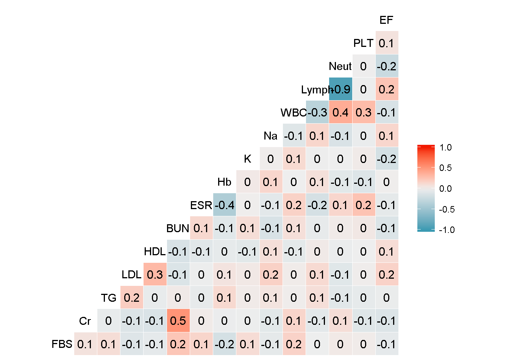 #### Looking into the Neutrophil to Lymphocyte relationship further. Calculating the NLR (neutrophil-lymphocyte ratio) below. Reference # 24 shows that they have identified that the normal NLR values in an adult, non-geriatric, population in good health are between 0.78 and 3.53.
## [1] 0.5689655## [1] 12.14286## [1] 2.244218NLR$Result <- cut(NLR$Ratio, breaks = c(0,0.77,3.53,12.5), labels = c("Low", "Med", "High"))
NLR$CAD <- FullSetB42$CAD
NLRlow <- sum(NLR$Result == "Low")
NLRlow## [1] 10## [1] 257## [1] 36## [1] 303Include remaining numeric attributes for further correlation overview: Shows no significant correlation results, other than what was already found:
library(GGally)
Allints1 <- ggcorr(FullSetB42[,c(1:2, 16:17, 36:50)], palette = "RdY1Gn", label = TRUE)
Allints1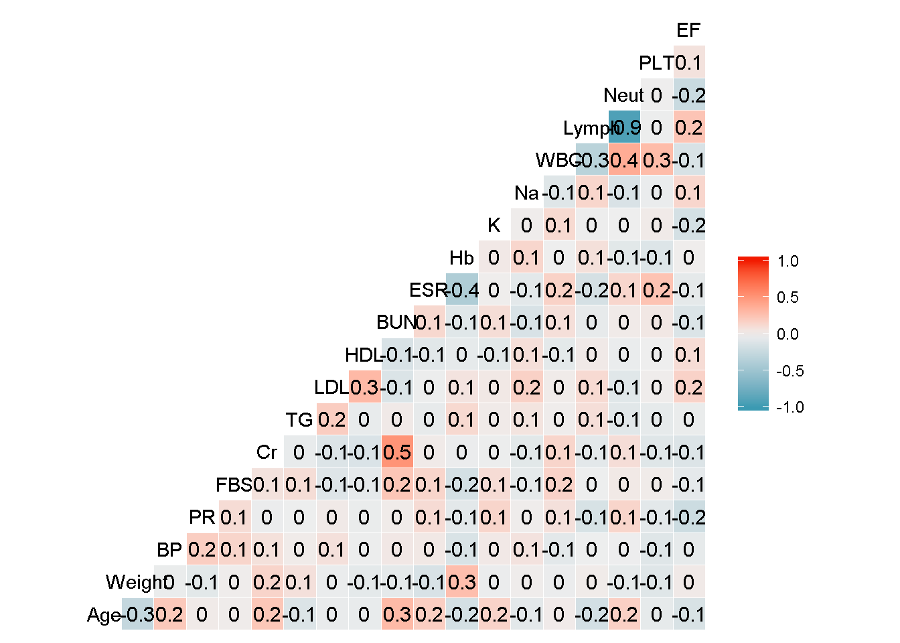 #### Boxplot of Low Density Lipoprotein (LDL), High Density Lipoprotein (HDL), Blood Urea Nitrogen (BUN), and Erythrocyte Sedimentation Rate (ESR):
attach(LABB4)
boxplot(LDL, HDL, BUN, ESR, col = c("cadetblue1", "antiquewhite", "chartreuse", "darkseagreen1"), notch = TRUE, horizontal = FALSE, outline = TRUE, plot = TRUE)
legend("topright", c("LDL", "HDL", "BUN", "ESR"),fill = c("cadetblue1", "antiquewhite", "chartreuse", "darkseagreen1"))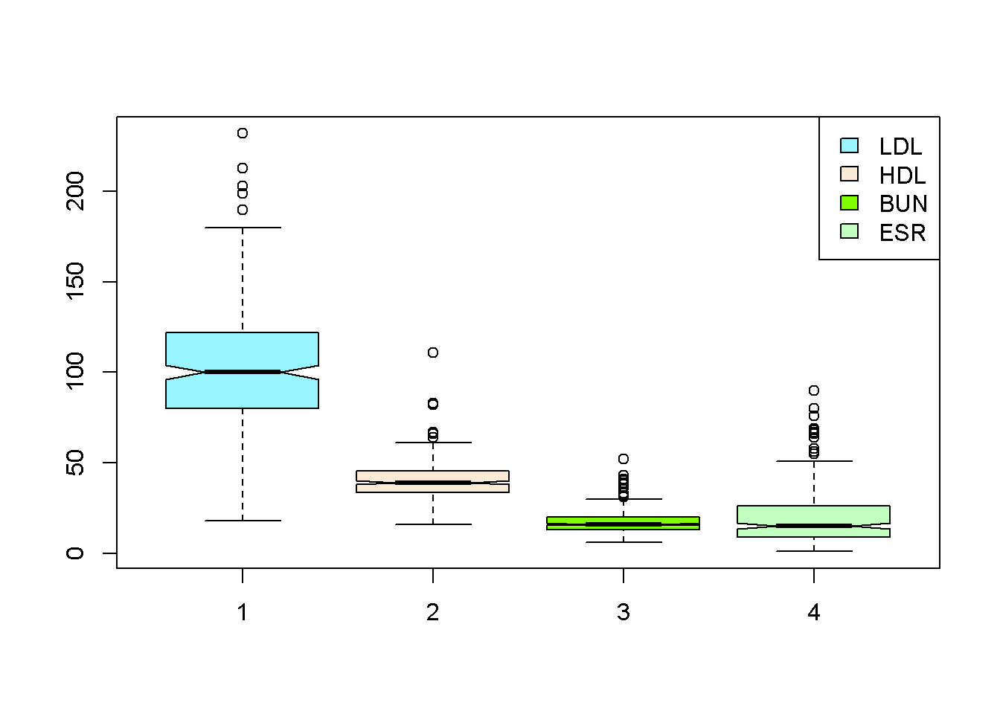 #### Boxplot of Sodium (Na), Lymphocyte % (Lymph), Neutrophil % (Neut), and Ejection Fraction % (EF):
boxplot(Na, Lymph, Neut, EF, col = c("indianred1", "antiquewhite", "chartreuse", "gold"), notch = TRUE, horizontal = FALSE, outline = TRUE, plot = TRUE)
legend("topright", c("Na", "Lymph", "Neut", "EF"),fill = c("indianred1", "antiquewhite", "chartreuse", "gold"))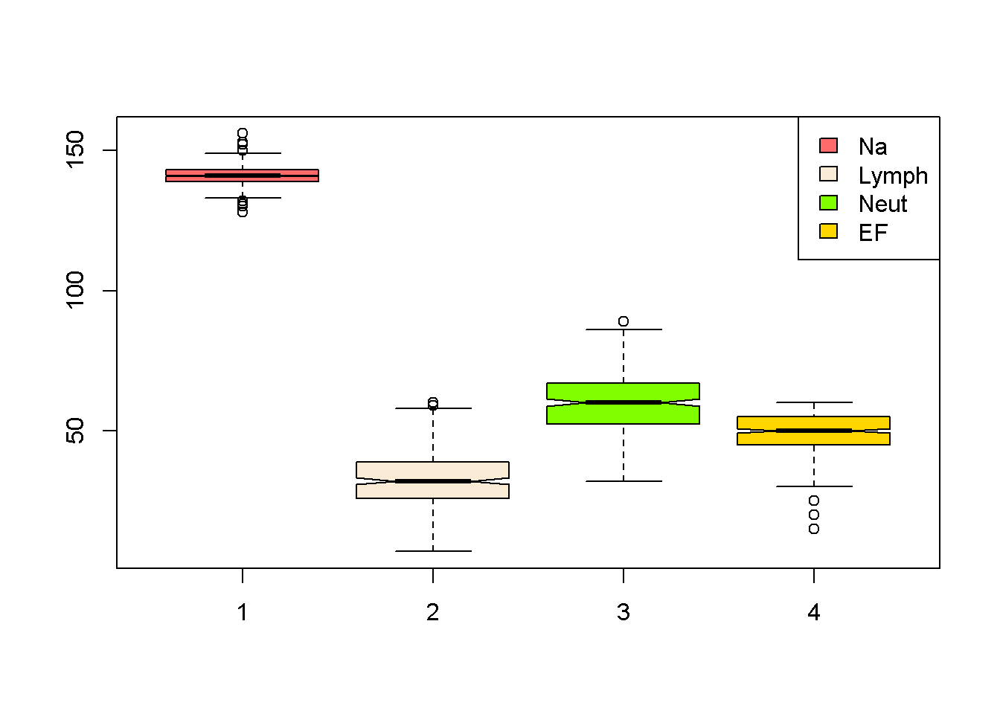 #### Boxplot of Triglyceride (TG), Platelet (PLT), and Fasting Blood Sugar (FBS):
boxplot(TG, PLT, FBS, col = c("aquamarine","indianred1", "gray90"), notch = TRUE, horizontal = FALSE, outline = TRUE, plot = TRUE)
legend("topright", c("TG", "PLT", "FBS"),fill = c("aquamarine","indianred1", "gray90"))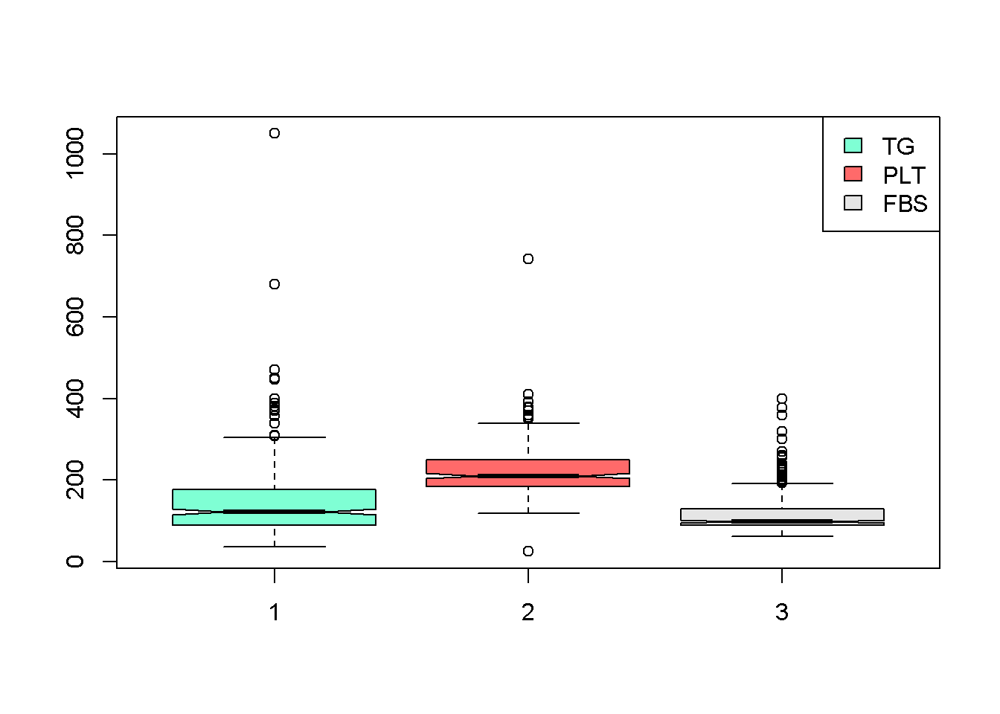 #### Boxplot of Hemoglobin (Hb), Potassium (K), and Creatine (Cr):
boxplot(Hb, K, Cr, col = c("aquamarine","indianred1", "gray90"), notch = TRUE, horizontal = FALSE, outline = TRUE, plot = TRUE)
legend("topright", c("Hb", "K", "Cr"),fill = c("aquamarine","indianred1", "gray90"))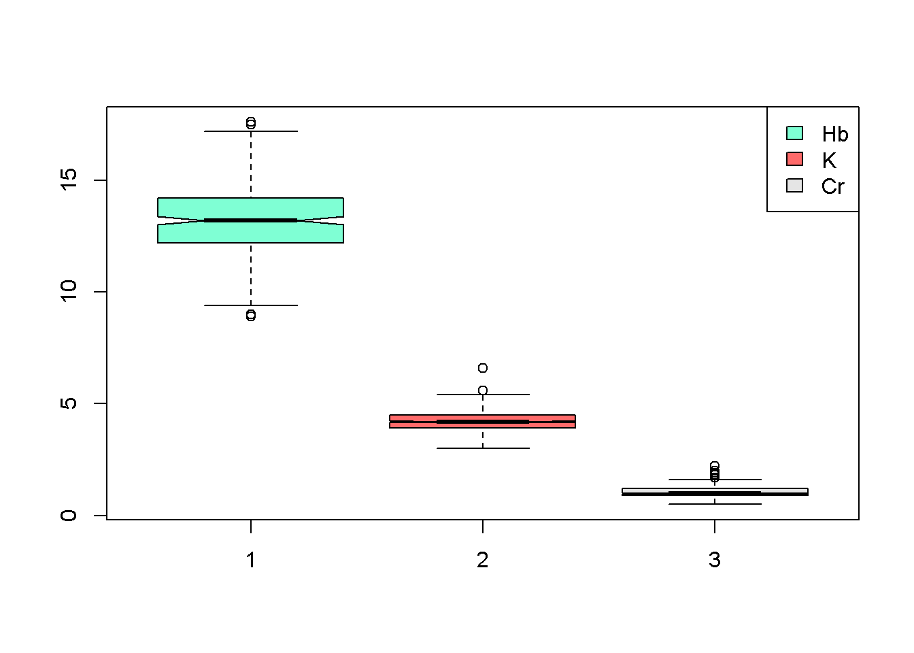 #### Boxplot of White Blood Cell (WBC) count:
boxplot(WBC, col = c("antiquewhite"), notch = TRUE, horizontal = FALSE, outline = TRUE, plot = TRUE)
legend("topright", c("WBC"),fill = c("antiquewhite"))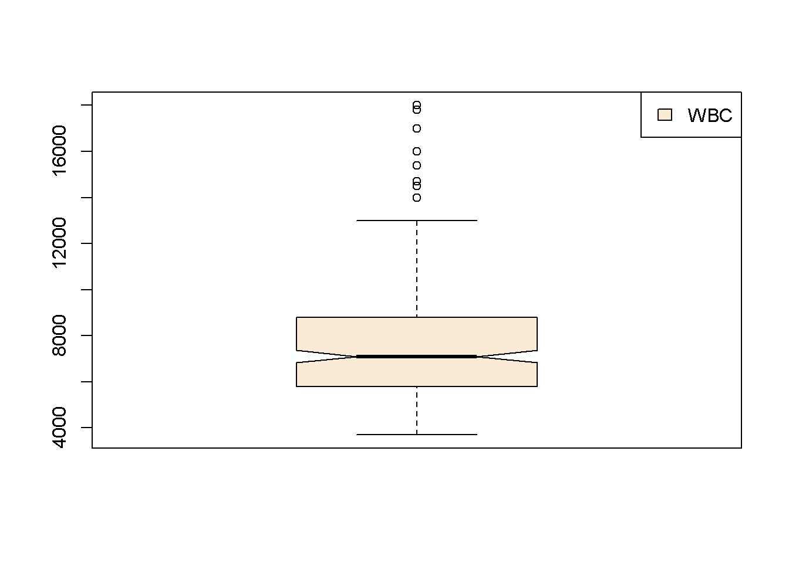 #### Boxplot to show distribution of Age and Weight:
## The following object is masked from LABB4:
##
## CADboxplot(Age, Weight, col = c("aquamarine","gray90"), notch = TRUE, horizontal = FALSE, outline = TRUE, plot = TRUE)
legend("topright", c("Age", "Weight"),fill = c("aquamarine","gray90"))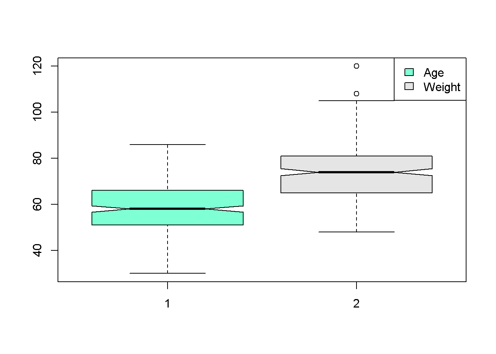 #### Shapiro tests of normality (H0: Distribution is normal; Reject null if p-value is less than .05). Note: sensitive when n>80. This test shows that ‘Age’ is NOT normally distributed.
##
## Attaching package: 'psych'## The following object is masked from 'package:Hmisc':
##
## describe## The following object is masked from 'package:effsize':
##
## cohen.d## The following objects are masked from 'package:ggplot2':
##
## %+%, alpha## vars n mean sd median trimmed mad min max range skew kurtosis
## X1 1 303 58.9 10.39 58 58.68 11.86 30 86 56 0.13 -0.44
## se
## X1 0.6##
## Shapiro-Wilk normality test
##
## data: (DemoB4$Age)
## W = 0.98974, p-value = 0.03162Hence, weight is also not normally distributed in this study.
## vars n mean sd median trimmed mad min max range skew kurtosis
## X1 1 303 73.83 11.99 74 73.44 11.86 48 120 72 0.41 0.3
## se
## X1 0.69##
## Shapiro-Wilk normality test
##
## data: (DemoB4$Weight)
## W = 0.98702, p-value = 0.007982And BMI is also not normally distributed.
## vars n mean sd median trimmed mad min max range skew kurtosis
## X1 1 303 27.25 4.1 26.78 27.07 3.77 18.12 40.9 22.79 0.43 0.11
## se
## X1 0.24##
## Shapiro-Wilk normality test
##
## data: (Allv1$BMI)
## W = 0.98564, p-value = 0.004061Can (carefully) use ‘describe’ for categorical variables too (since the psych package recodes categories as numbers):
## vars n mean sd median trimmed mad min max range skew
## Age 1 303 58.90 10.39 58 58.68 11.86 30 86 56 0.13
## Weight 2 303 73.83 11.99 74 73.44 11.86 48 120 72 0.41
## Sex* 3 303 1.58 0.49 2 1.60 0.00 1 2 1 -0.33
## DM 4 303 0.30 0.46 0 0.25 0.00 0 1 1 0.88
## HTN 5 303 0.59 0.49 1 0.61 0.00 0 1 1 -0.37
## Smoker 6 303 0.21 0.41 0 0.14 0.00 0 1 1 1.43
## ExSmoker 7 303 0.03 0.18 0 0.00 0.00 0 1 1 5.20
## FH 8 303 0.16 0.37 0 0.07 0.00 0 1 1 1.86
## Obesity* 9 303 1.70 0.46 2 1.74 0.00 1 2 1 -0.85
## CRF* 10 303 1.02 0.14 1 1.00 0.00 1 2 1 6.86
## CVA* 11 303 1.02 0.13 1 1.00 0.00 1 2 1 7.55
## AD* 12 303 1.04 0.19 1 1.00 0.00 1 2 1 4.93
## TD* 13 303 1.02 0.15 1 1.00 0.00 1 2 1 6.32
## CHF* 14 303 1.00 0.06 1 1.00 0.00 1 2 1 17.23
## DLP* 15 303 1.37 0.48 1 1.34 0.00 1 2 1 0.54
## BP 16 303 129.55 18.94 130 128.46 14.83 90 190 100 0.57
## PR 17 303 75.14 8.91 70 74.22 7.41 50 110 60 1.07
## kurtosis se
## Age -0.44 0.60
## Weight 0.30 0.69
## Sex* -1.90 0.03
## DM -1.22 0.03
## HTN -1.87 0.03
## Smoker 0.05 0.02
## ExSmoker 25.15 0.01
## FH 1.47 0.02
## Obesity* -1.28 0.03
## CRF* 45.20 0.01
## CVA* 55.23 0.01
## AD* 22.41 0.01
## TD* 38.04 0.01
## CHF* 296.02 0.00
## DLP* -1.72 0.03
## BP 0.48 1.09
## PR 2.33 0.51Boxplot to show distribution of Blood Pressure and Pulse Rate
## The following object is masked from DemoB4:
##
## CAD## The following object is masked from LABB4:
##
## CAD## Warning in bxp(list(stats = structure(c(90, 120, 130, 140, 170, 60, 70, :
## some notches went outside hinges ('box'): maybe set notch=FALSE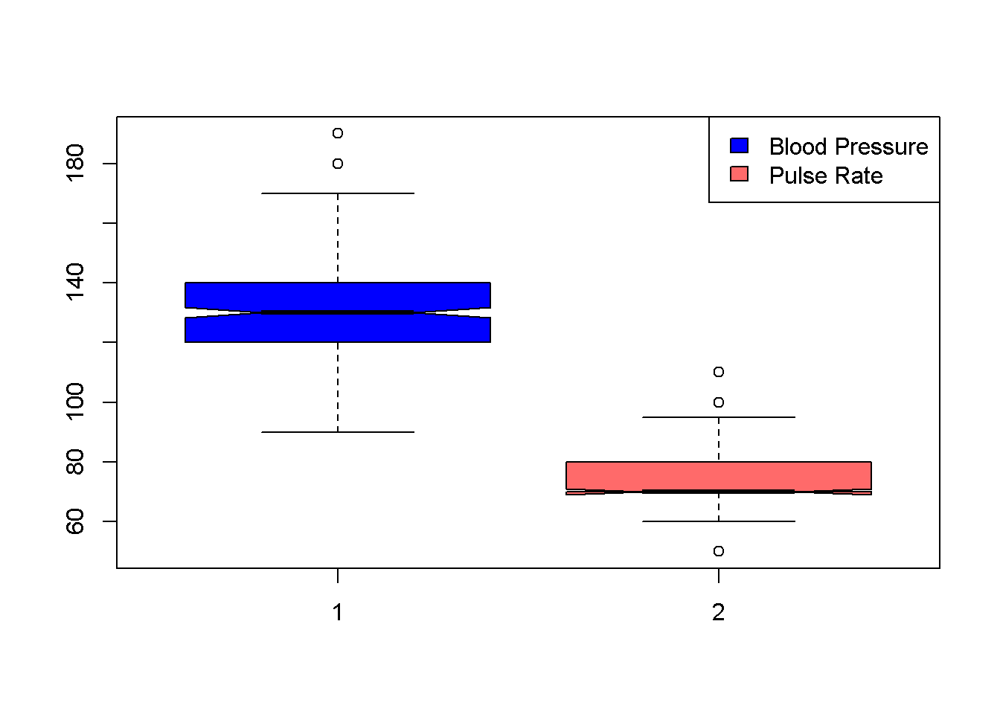 #### Blood Pressure (BP) is not normally distributed:
## vars n mean sd median trimmed mad min max range skew kurtosis
## X1 1 303 129.55 18.94 130 128.46 14.83 90 190 100 0.57 0.48
## se
## X1 1.09##
## Shapiro-Wilk normality test
##
## data: (SymptomB4$BP)
## W = 0.9543, p-value = 4.039e-08Pulse Rate is not normally distributed:
## vars n mean sd median trimmed mad min max range skew kurtosis
## X1 1 303 75.14 8.91 70 74.22 7.41 50 110 60 1.07 2.33
## se
## X1 0.51##
## Shapiro-Wilk normality test
##
## data: (SymptomB4$PR)
## W = 0.86016, p-value = 6.633e-16Density plot of weight and sex (before discretization):
library(ggplot2)
library(dplyr)
library(plyr)
WeightMu <- ddply(DemoB4, "Sex", summarise, grp.mean=mean(Weight))
head(WeightMu)## Sex grp.mean
## 1 Fmale 70.52756
## 2 Male 76.21591DDen1 <- ggplot(DemoB4, aes(x = Weight, fill = Sex)) +
geom_density(alpha = 0.2)+
geom_vline(data = WeightMu, aes(xintercept=grp.mean, colour = Sex),
linetype = "dashed")
DDen1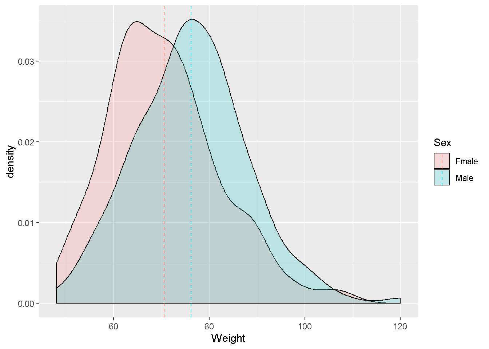 #### Density plot of BMI and sex (before discretization):
## Sex grp.mean
## 1 Fmale 28.61687
## 2 Male 26.26082BMIden <- ggplot(Allv1, aes(x = BMI, fill = Sex)) +
geom_density(alpha = 0.2)+
geom_vline(data = BMIMu, aes(xintercept=grp.mean, colour = Sex),
linetype = "dashed")
BMIden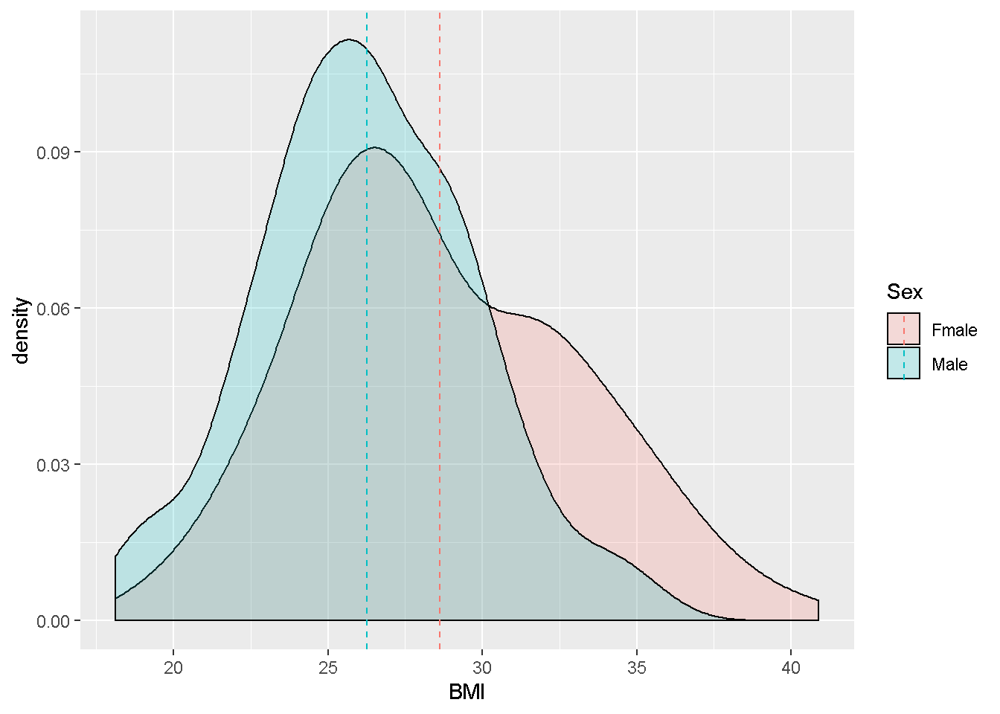 #### Will be completing a number of ASSOCIATIONS between many categorical variables, starting with a few straight forward investigation into commonly accepted ‘associations’. Interpretation of results when K = 2: SMALL Association: 0.10 - < 0.30; MEDIUM Association: 0.30 - < 0.50; LARGE Association: ??? 0.50
Starting with Diabetes (DM) and Hypertension (HTN): Shows small association
## [1] 0.2105191Ex-Smoker and Obesity shows no association:
## Warning in chisq.test(...): Chi-squared approximation may be incorrect## [1] 0.02154688Ex-Smoker and Obesity shows no association:
## [1] 0.01298559Hypertensin and current smoker has a small association:
## [1] 0.1607305Hypertension and Stroke (CVA) has no association:
## Warning in chisq.test(...): Chi-squared approximation may be incorrect## [1] 0.02877846Congestive Heart Failure (CHF) and Obsesity has no association (see below):
## Warning in chisq.test(...): Chi-squared approximation may be incorrect## [1] 1.5974e-15Determining whether there is any significant variation in the ‘NCP’ column: Very low variation (94.7% of NCP entries are ‘No’)
## [1] 94.71947Determining whether there is any significant variation in the ‘ACP’ column: 69.3% of these ‘ACP’ entries are ‘No’
## [1] 69.30693Barplot of BBB attribute
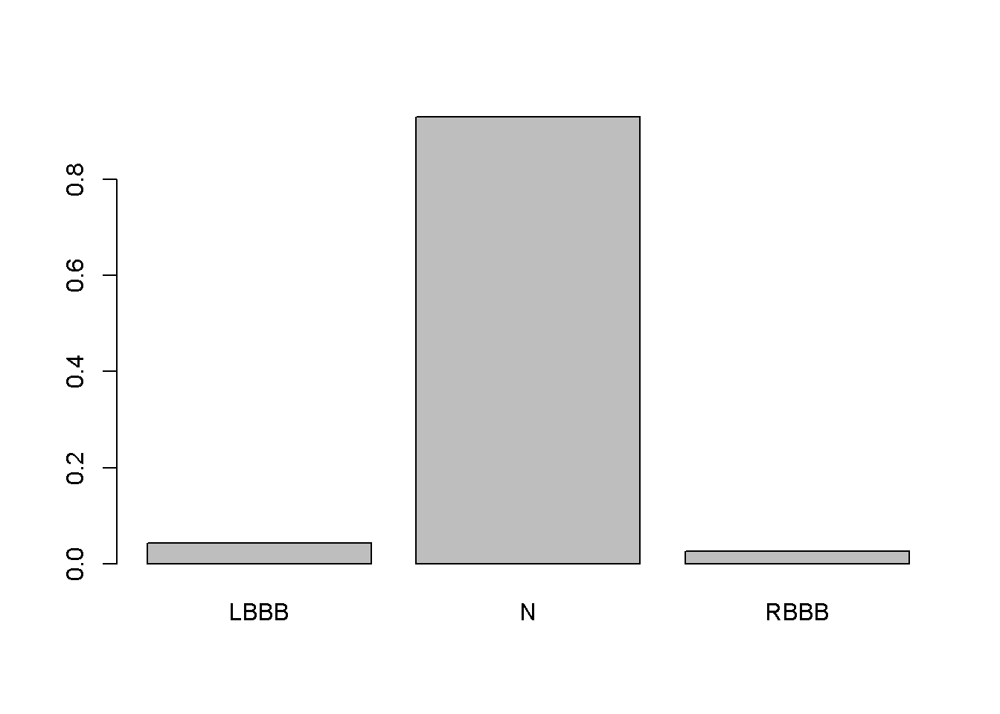 #### Barplot of VHD attribute
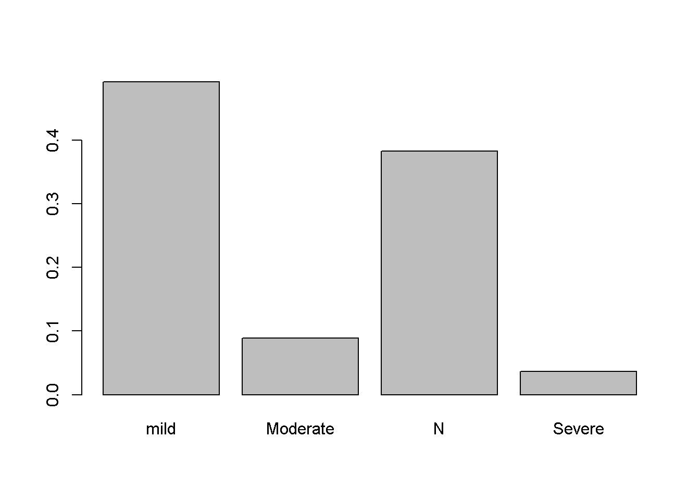
Feature selection on all the attributes combined, as well as on the 4 individual attribute groups - using the FSelector package:
Starting with the full data set - selected: CAD ~ TCP + ACP + RWMA + EF + Age + HTN + NCP + DM + Tinv + VHD
## attr_importance
## Age 0.290317717
## Weight 0.053693554
## Sex 0.067041240
## DM 0.252897001
## HTN 0.287760932
## Smoker 0.073503651
## ExSmoker 0.035578171
## FH 0.035605456
## Obesity 0.022461339
## CRF 0.090204905
## CVA 0.024945620
## AD 0.084178945
## TD 0.048077279
## CHF 0.036519875
## DLP 0.012718268
## BP 0.135498540
## PR 0.073888082
## Edema 0.054069268
## WPP 0.082207155
## LR 0.045178608
## SysM 0.004856462
## DiaM 0.146777311
## TCP 0.542966708
## Dyspnea 0.125210904
## Fclass 0.085918550
## ACP 0.415921817
## NCP 0.274183618
## LTAng 0.051732623
## QWave 0.149848291
## STelev 0.139684381
## STdep 0.144425871
## Tinv 0.236932878
## LVH 0.051196374
## PoorR 0.111040227
## BBB 0.088749817
## FBS 0.229347982
## Cr 0.102491681
## TG 0.086830465
## LDL 0.014501583
## HDL 0.015804598
## BUN 0.091662224
## ESR 0.065213016
## Hb 0.048994402
## K 0.069632280
## Na 0.067555843
## WBC 0.105345858
## Lymph 0.129137722
## Neut 0.106735676
## PLT 0.100855982
## EF 0.329842476
## RWMA 0.334812718
## VHD 0.231208043## CAD ~ TCP + ACP + RWMA + EF + Age + HTN + NCP + DM + Tinv + VHD
## <environment: 0x0000000022ad9658>Next, using the ‘Demo’ (Demographic) attribute data set - results: CAD ~ Age + HTN + DM + CRF + AD
## attr_importance
## Age 0.29031772
## Weight 0.05369355
## Sex 0.06704124
## DM 0.25289700
## HTN 0.28776093
## Smoker 0.07350365
## ExSmoker 0.03557817
## FH 0.03560546
## Obesity 0.02246134
## CRF 0.09020490
## CVA 0.02494562
## AD 0.08417894
## TD 0.04807728
## CHF 0.03651987
## DLP 0.01271827## CAD ~ Age + HTN + DM + CRF + AD
## <environment: 0x00000000196239b0>Next, using the ‘Symptom’ (Symptom & Examination) attribute data set - results: CAD ~ TCP + ACP + NCP + DiaM + BP
## attr_importance
## BP 0.135498540
## PR 0.073888082
## Edema 0.054069268
## WPP 0.082207155
## LR 0.045178608
## SysM 0.004856462
## DiaM 0.146777311
## TCP 0.542966708
## Dyspnea 0.125210904
## Fclass 0.085918550
## ACP 0.415921817
## NCP 0.274183618
## LTAng 0.051732623## CAD ~ TCP + ACP + NCP + DiaM + BP
## <environment: 0x0000000020583e18>Next, using the ’ECG’attribute data set - results: CAD ~ Tinv + QWave + STdep + STelev + PoorR
## attr_importance
## QWave 0.14984829
## STelev 0.13968438
## STdep 0.14442587
## Tinv 0.23693288
## LVH 0.05119637
## PoorR 0.11104023
## BBB 0.08874982## CAD ~ Tinv + QWave + STdep + STelev + PoorR
## <environment: 0x0000000021636970>Lastly, using the ‘LAB’ (Laboratory and Echocardiographic) attribute data set - results: CAD ~ RWMA + EF + VHD + FBS + Lymph
## attr_importance
## FBS 0.22934798
## Cr 0.10249168
## TG 0.08683046
## LDL 0.01450158
## HDL 0.01580460
## BUN 0.09166222
## ESR 0.06521302
## Hb 0.04899440
## K 0.06963228
## Na 0.06755584
## WBC 0.10534586
## Lymph 0.12913772
## Neut 0.10673568
## PLT 0.10085598
## EF 0.32984248
## RWMA 0.33481272
## VHD 0.23120804## CAD ~ RWMA + EF + VHD + FBS + Lymph
## <environment: 0x000000001d617258>Now, comparing these discretized results with those from before discretization:
Comparing the discretized feature selection results found using the ‘FSelector’ package with the results using the ‘FSelectorRcpp’ package - results: CAD ~ TCP + ACP + RWMA + EF + HTN + Age + DM + NCP + Tinv + FBS
library(FSelectorRcpp)
library(tidyverse)
FS2all <- information_gain(
formula = CAD~.,
data = AllvFinal,
type = "infogain",
threads = 2
) %>%
cut_attrs(
k = 10
) %>%
to_formula(
attrs = .,
class = "CAD"
)
print(FS2all)## CAD ~ TCP + ACP + RWMA + EF + HTN + Age + DM + NCP + Tinv + FBS
## <environment: 0x0000000022a412e8>Lastly, comparing the output of the FSelectorRcpp package using the data set that was not discretized yet (FullSetB42 data set) - result: CAD ~ TCP + ACP + RWMA + Age + EF + HTN + DM + BP + NCP + Tinv
FS2B4all <- information_gain(
formula = CAD~.,
data = FullSetB42,
type = "infogain",
threads = 2
) %>%
cut_attrs(
k = 10
) %>%
to_formula(
attrs = .,
class = "CAD"
)
print(FS2B4all)## CAD ~ TCP + ACP + RWMA + Age + EF + HTN + DM + BP + NCP + Tinv
## <environment: 0x0000000022d69de8>Checking on strength of associations between top 12 attributes and the dependent variable, ranked in descending order:
## [1] 0.5356469## [1] 0.4080137## [1] 0.3267227## [1] 0.3221946## [1] 0.2814322## [1] 0.2803429## Warning in chisq.test(...): Chi-squared approximation may be incorrect## [1] 0.2578747## [1] 0.2449149## Warning in chisq.test(...): Chi-squared approximation may be incorrect## [1] 0.231208## Warning in chisq.test(...): Chi-squared approximation may be incorrect## [1] 0.229348## [1] 0.2289508## [1] 0.1255092Checking on the strength of associations between the top 12 attributes and each other:
## [1] 0.7156668## [1] 0.3519147## [1] 0.269923## [1] 0.2416607## [1] 0.2105191## Warning in chisq.test(...): Chi-squared approximation may be incorrect## [1] 0.1636751## [1] 0.1608916## Warning in chisq.test(...): Chi-squared approximation may be incorrect## [1] 0.1379553## [1] 0.1360726## [1] 0.1078061## [1] 0.1060843## [1] 0.09646362Checking associations between the final variables that do not have a statistically significant relationship with the dependent variable (per the logistic regression results later). That is, checkint ACP and NCP against each other, and the other variables, including TCP, EF, RWMA, HTN, Age and DM (as well as the dependent variable). NOTE: When DF=1, the interpretation of the Cramer’s V results (effect) would be as follows: (0.10 = small effect) (0.30 = medium effect) (0.50=large effect)
## [1] 0.7156668## [1] 0.1645235## [1] 0.1729343## [1] 0.1373895## [1] 0.1141707## [1] 0.08023603## [1] 0.4080137## [1] 0.2416607## [1] 0.05887248## Warning in chisq.test(...): Chi-squared approximation may be incorrect## [1] 0.0668128## [1] 0.001436249## Warning in chisq.test(...): Chi-squared approximation may be incorrect## [1] 0.03838205## Warning in chisq.test(...): Chi-squared approximation may be incorrect## [1] 0.07274291## Warning in chisq.test(...): Chi-squared approximation may be incorrect## [1] 0.2578747Creating the final variable data set using the FSelector package:
Creating a second final variable data set using the FSelectorRcpp package:
Using createDataPartition() to split data into training and test sets (75% and 25%). Since the outcome variable (CAD) is categorical, this function will make sure that the distribution of outcome variable classes will be similar in both of the sets. Can use the same split for training/testing by commenting out this chunk:
Using ‘Recursive Feature Elimination’ to find the best subset of atttributes to use for modeling (not needed for subsequent runs once the final set of predictors have been determined):
library(plyr)
control <- rfeControl(functions = rfFuncs,
method = "repeatedcv",
repeats = 10,
verbose = FALSE)
outcomeName <- 'CAD'
predictors <- names(AllvFtrain)[!names(AllvFtrain) %in% outcomeName]
CAD_Profile <- rfe(AllvFtrain[,predictors], AllvFtrain[,outcomeName],
rfeControl = control)
CAD_Profile##
## Recursive feature selection
##
## Outer resampling method: Cross-Validated (10 fold, repeated 10 times)
##
## Resampling performance over subset size:
##
## Variables Accuracy Kappa AccuracySD KappaSD Selected
## 4 0.7799 0.4396 0.06915 0.1870
## 8 0.8389 0.5826 0.06286 0.1782
## 16 0.8355 0.5842 0.06354 0.1708
## 52 0.8631 0.6462 0.06371 0.1763 *
##
## The top 5 variables (out of 52):
## TCP, ACP, RWMA, HTN, EF## [1] "TCP" "ACP" "RWMA" "HTN" "EF" "Age" "Tinv" "DM"Taking the top 8 predictors:
Visualize degree of class imbalance:
library(ggsignif)
library(ggsci)
library(ggplot2)
ggplot(AllvFinal, aes(CAD)) +
geom_bar(fill = "#0073C2FF")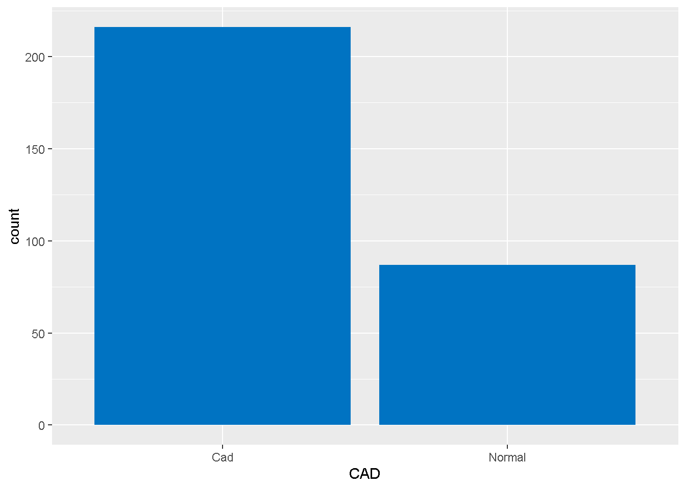
Function created to provide additional metrics for evaluation:
Random Forest Training (Note: Using “down” for subsampling for class imbalance since “smote” introduces NA’s into the results):
library(tictoc)
library(caret)
library(DMwR)
tic("Random Forest Algorithm Timing")
RFControl <- trainControl(method = "repeatedcv", number = 10, repeats = 3, sampling = "down", savePredictions = TRUE, classProbs = TRUE, summaryFunction = MySummary)
rfFit <- train(AllvFtrain[,predictors], AllvFtrain[,outcomeName], method = 'rf', returnResamp = "all", trControl = RFControl)
rfFit$results## mtry Accuracy Kappa ROC Sens Spec AUC
## 1 2 0.8316151 0.6209360 0.9006171 0.8291667 0.8396825 0.8403841
## 2 5 0.8377251 0.6361937 0.8964753 0.8355392 0.8444444 0.7606506
## 3 8 0.8188790 0.5896308 0.8846391 0.8210784 0.8126984 0.7119419
## Precision Recall F AccuracySD KappaSD ROCSD SensSD
## 1 0.9285118 0.8291667 0.8740995 0.05576078 0.1198843 0.06825898 0.06694487
## 2 0.9325080 0.8355392 0.8775527 0.07024558 0.1461757 0.06745636 0.09387574
## 3 0.9190013 0.8210784 0.8644044 0.06054576 0.1320629 0.06897585 0.07673862
## SpecSD AUCSD PrecisionSD RecallSD FSD
## 1 0.1164635 0.0754014 0.05131656 0.06694487 0.04403610
## 2 0.1350831 0.1099142 0.05687062 0.09387574 0.05762177
## 3 0.1472682 0.1076478 0.06104176 0.07673862 0.04885911#plot(rfFit)
RFpredictions <- predict(object = rfFit, AllvFtest[,predictors], type = 'raw')
table(RFpredictions)## RFpredictions
## Cad Normal
## 49 26## rf variable importance
##
## Overall
## TCP 100.00
## Age 25.39
## DM 24.87
## EF 23.84
## ACP 23.68
## HTN 20.25
## RWMA 15.34
## NCP 0.00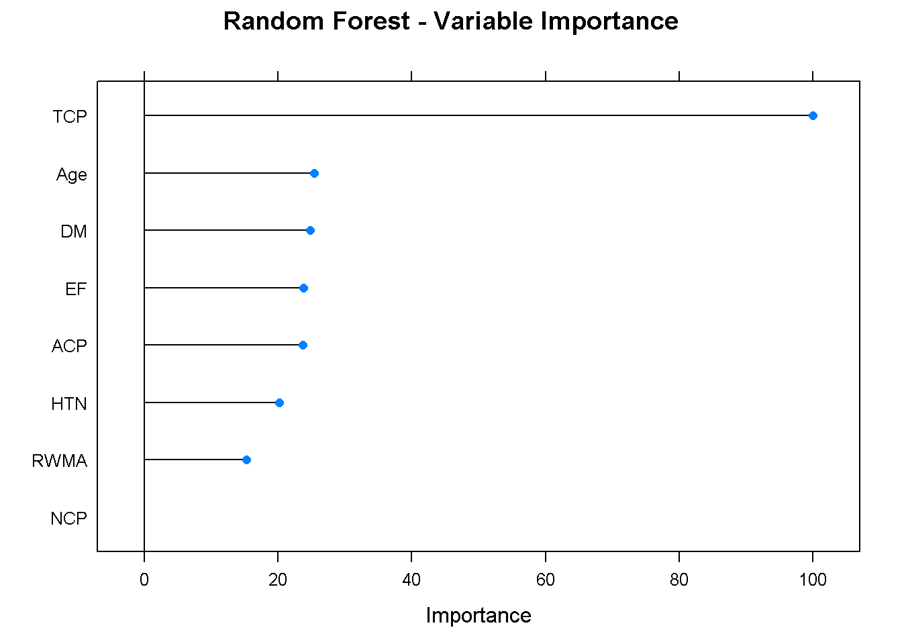
## Confusion Matrix and Statistics
##
## Reference
## Prediction Cad Normal
## Cad 46 3
## Normal 8 18
##
## Accuracy : 0.8533
## 95% CI : (0.7527, 0.9244)
## No Information Rate : 0.72
## P-Value [Acc > NIR] : 0.005071
##
## Kappa : 0.6609
##
## Mcnemar's Test P-Value : 0.227800
##
## Sensitivity : 0.8519
## Specificity : 0.8571
## Pos Pred Value : 0.9388
## Neg Pred Value : 0.6923
## Precision : 0.9388
## Recall : 0.8519
## F1 : 0.8932
## Prevalence : 0.7200
## Detection Rate : 0.6133
## Detection Prevalence : 0.6533
## Balanced Accuracy : 0.8545
##
## 'Positive' Class : Cad
## RFcMatrix1 <- confusionMatrix(RFpredictions, AllvFtest[,outcomeName], mode = 'everything')
RFcMatrix1$table %>%
data.frame() %>%
mutate(Prediction = factor(Prediction, levels = c("Cad", "Normal"))) %>%
group_by(Reference) %>%
mutate(total = sum(Freq)) %>%
ungroup() %>%
ggplot(aes(Reference, Prediction, fill = Freq)) +
geom_tile() +
geom_text(aes(label = Freq), size = 8) +
scale_fill_gradient(low = "white", high = "palegreen4") +
scale_x_discrete(position = "top") +
geom_tile(color = "black", fill = "black", alpha = 0)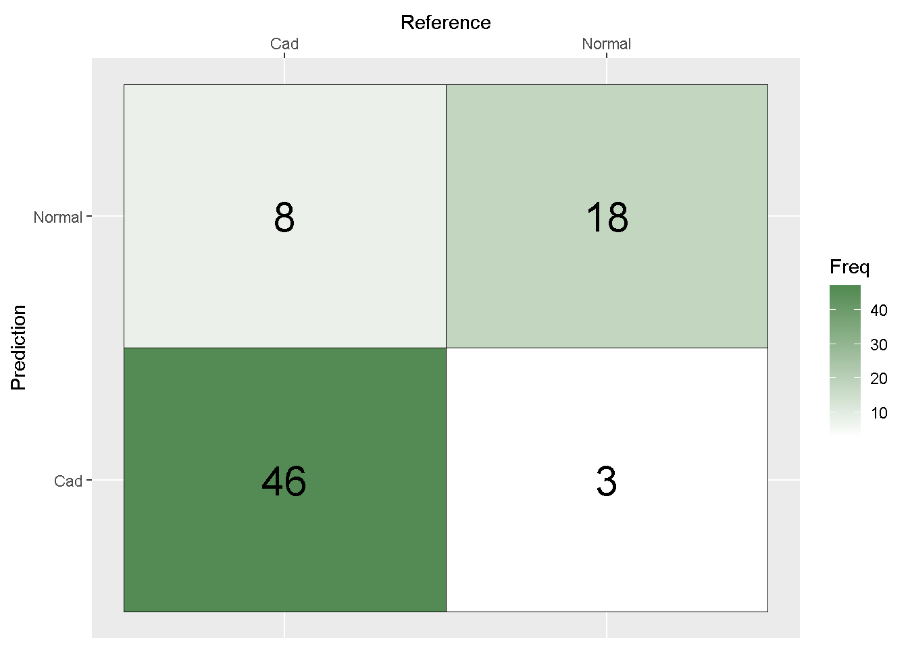
EvalRF1 <- data.frame(c(RFcMatrix1$overall['Accuracy'], RFcMatrix1$overall['Kappa'], RFcMatrix1$byClass['Sensitivity'], RFcMatrix1$byClass['Specificity'], RFcMatrix1$byClass['Precision'], RFcMatrix1$byClass['Recall'], RFcMatrix1$byClass['F1']))
colnames(EvalRF1)[1] <- "Metrics"
EvalRF1## Metrics
## Accuracy 0.8533333
## Kappa 0.6609125
## Sensitivity 0.8518519
## Specificity 0.8571429
## Precision 0.9387755
## Recall 0.8518519
## F1 0.8932039## Random Forest Algorithm Timing: 6.85 sec elapsedTraining for Naive Bayes (Note: Using “down” for subsampling to address class imbalance):
library(klaR)
library(caret)
tic("Naive Bayes Algorithm Timing")
NBControl <- trainControl(method = "repeatedcv", number = 10, repeats = 3, sampling = "down", savePredictions = TRUE, classProbs = TRUE, summaryFunction = MySummary)
NBfit <- train(AllvFtrain[,predictors], AllvFtrain[,outcomeName], method = 'nb', returnResamp = "all", trControl = NBControl)
NBfit$results## usekernel fL adjust Accuracy Kappa ROC Sens Spec
## 1 FALSE 0 1 0.8379611 0.6391956 0.9135869 0.8313725 0.8555556
## 2 TRUE 0 1 0.8379666 0.6383967 0.9104065 0.8333333 0.8507937
## AUC Precision Recall F AccuracySD KappaSD ROCSD
## 1 0.8723811 0.9356693 0.8313725 0.8768519 0.07393137 0.148061 0.05591834
## 2 0.8655596 0.9334914 0.8333333 0.8770759 0.07302141 0.145848 0.05744276
## SensSD SpecSD AUCSD PrecisionSD RecallSD FSD
## 1 0.09592279 0.1242592 0.04784694 0.05353828 0.09592279 0.06465201
## 2 0.09511082 0.1212334 0.04841834 0.05246315 0.09511082 0.06396609## ROC curve variable importance
##
## Importance
## TCP 100.00
## ACP 68.36
## HTN 52.61
## RWMA 48.82
## EF 46.45
## Age 40.40
## DM 33.53
## NCP 0.00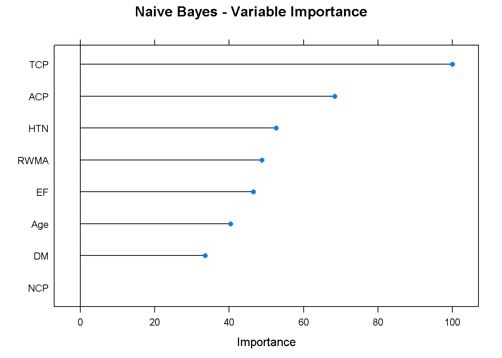
# Naive Bayes Predictions:
NBpredictions <- predict(object = NBfit, AllvFtest[,predictors], type = 'raw')
table(NBpredictions)## NBpredictions
## Cad Normal
## 50 25## Confusion Matrix and Statistics
##
## Reference
## Prediction Cad Normal
## Cad 49 1
## Normal 5 20
##
## Accuracy : 0.92
## 95% CI : (0.834, 0.9701)
## No Information Rate : 0.72
## P-Value [Acc > NIR] : 1.76e-05
##
## Kappa : 0.8125
##
## Mcnemar's Test P-Value : 0.2207
##
## Sensitivity : 0.9074
## Specificity : 0.9524
## Pos Pred Value : 0.9800
## Neg Pred Value : 0.8000
## Precision : 0.9800
## Recall : 0.9074
## F1 : 0.9423
## Prevalence : 0.7200
## Detection Rate : 0.6533
## Detection Prevalence : 0.6667
## Balanced Accuracy : 0.9299
##
## 'Positive' Class : Cad
## NBcMatrix1 <- confusionMatrix(NBpredictions, AllvFtest[,outcomeName], mode = 'everything')
NBcMatrix1$table %>%
data.frame() %>%
mutate(Prediction = factor(Prediction, levels = c("Cad", "Normal"))) %>%
group_by(Reference) %>%
mutate(total = sum(Freq)) %>%
ungroup() %>%
ggplot(aes(Reference, Prediction, fill = Freq)) +
geom_tile() +
geom_text(aes(label = Freq), size = 8) +
scale_fill_gradient(low = "white", high = "palegreen4") +
scale_x_discrete(position = "top") +
geom_tile(color = "black", fill = "black", alpha = 0)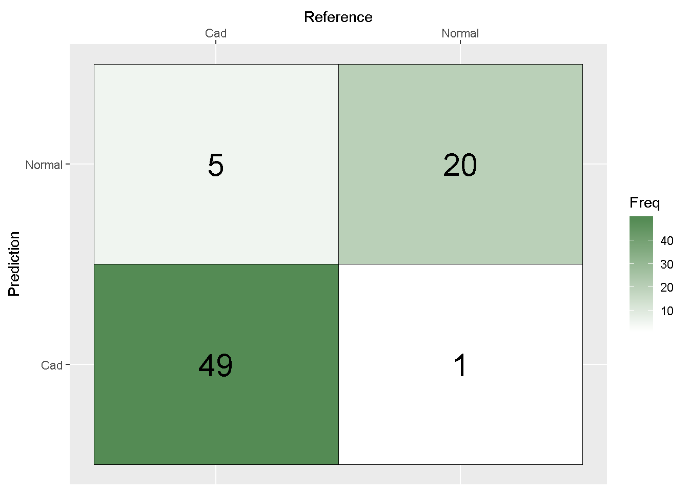
EvalNB1 <- data.frame(c(NBcMatrix1$overall['Accuracy'], NBcMatrix1$overall['Kappa'], NBcMatrix1$byClass['Sensitivity'], NBcMatrix1$byClass['Specificity'], NBcMatrix1$byClass['Precision'], NBcMatrix1$byClass['Recall'], NBcMatrix1$byClass['F1']))
colnames(EvalNB1)[1] <- "Metrics"
EvalNB1## Metrics
## Accuracy 0.9200000
## Kappa 0.8125000
## Sensitivity 0.9074074
## Specificity 0.9523810
## Precision 0.9800000
## Recall 0.9074074
## F1 0.9423077## Naive Bayes Algorithm Timing: 3.34 sec elapsedTraining for Logistic Regression (Note: Using ‘smote’ subsampling to address class imbalance):
tic("Logistic Regression Algorithm Timing")
LRControl <- trainControl(method = "repeatedcv", number = 10, repeats = 3, sampling = "smote", savePredictions = TRUE, classProbs = TRUE, summaryFunction = MySummary)
LRFit <- train(AllvFtrain[,predictors], AllvFtrain[,outcomeName], method = 'glm', family = "binomial", trControl = LRControl)
LRFit$results## parameter Accuracy Kappa ROC Sens Spec AUC
## 1 none 0.8536561 0.6189931 0.9085347 0.9343137 0.6539683 0.8825708
## Precision Recall F AccuracySD KappaSD ROCSD SensSD
## 1 0.8719566 0.9343137 0.9006763 0.07068711 0.1868197 0.072864 0.06393935
## SpecSD AUCSD PrecisionSD RecallSD FSD
## 1 0.1740375 0.0403872 0.05719114 0.06393935 0.04871638## glm variable importance
##
## Overall
## TCP1 100.00
## EF.L 94.74
## RWMA.L 79.12
## Age.L 67.04
## HTN1 64.19
## DM1 59.00
## NCPY 16.60
## ACPY 0.00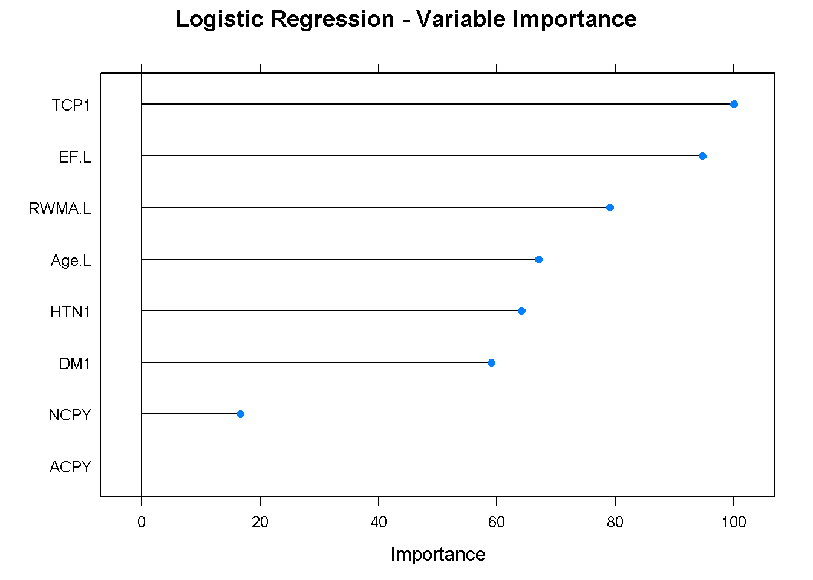
# Logistic Regression Predictions:
LRpredictions <- predict(object = LRFit, AllvFtest[,predictors], type = 'raw')
table(LRpredictions)## LRpredictions
## Cad Normal
## 56 19## Confusion Matrix and Statistics
##
## Reference
## Prediction Cad Normal
## Cad 51 5
## Normal 3 16
##
## Accuracy : 0.8933
## 95% CI : (0.8006, 0.9528)
## No Information Rate : 0.72
## P-Value [Acc > NIR] : 0.0002469
##
## Kappa : 0.7275
##
## Mcnemar's Test P-Value : 0.7236736
##
## Sensitivity : 0.9444
## Specificity : 0.7619
## Pos Pred Value : 0.9107
## Neg Pred Value : 0.8421
## Precision : 0.9107
## Recall : 0.9444
## F1 : 0.9273
## Prevalence : 0.7200
## Detection Rate : 0.6800
## Detection Prevalence : 0.7467
## Balanced Accuracy : 0.8532
##
## 'Positive' Class : Cad
## LRcMatrix1 <- confusionMatrix(LRpredictions, AllvFtest[,outcomeName], mode = 'everything')
LRcMatrix1$table %>%
data.frame() %>%
mutate(Prediction = factor(Prediction, levels = c("Cad", "Normal"))) %>%
group_by(Reference) %>%
mutate(total = sum(Freq)) %>%
ungroup() %>%
ggplot(aes(Reference, Prediction, fill = Freq)) +
geom_tile() +
geom_text(aes(label = Freq), size = 8) +
scale_fill_gradient(low = "white", high = "palegreen4") +
scale_x_discrete(position = "top") +
geom_tile(color = "black", fill = "black", alpha = 0)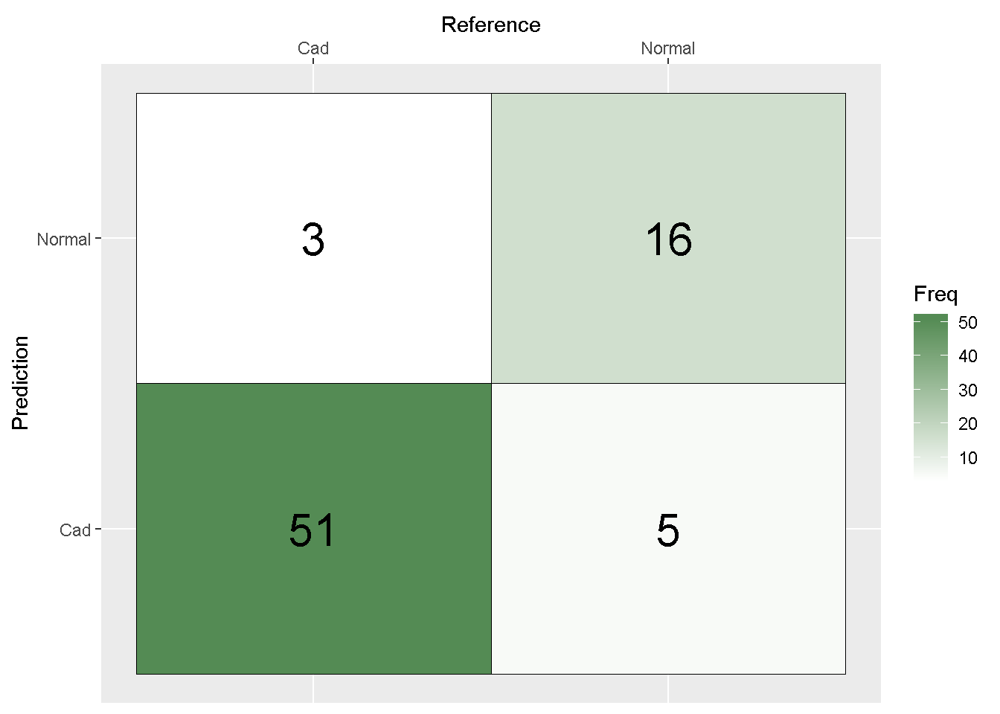
EvalLR1 <- data.frame(c(LRcMatrix1$overall['Accuracy'], LRcMatrix1$overall['Kappa'], LRcMatrix1$byClass['Sensitivity'], LRcMatrix1$byClass['Specificity'], LRcMatrix1$byClass['Precision'], LRcMatrix1$byClass['Recall'], LRcMatrix1$byClass['F1']))
colnames(EvalLR1)[1] <- "Metrics"
EvalLR1## Metrics
## Accuracy 0.8933333
## Kappa 0.7275204
## Sensitivity 0.9444444
## Specificity 0.7619048
## Precision 0.9107143
## Recall 0.9444444
## F1 0.9272727## Logistic Regression Algorithm Timing: 2.87 sec elapsedTraining and testing for all Three Algorithms Combined (different parameters). Using ‘down’ subsampling to address class imbalance:
library(tictoc)
library(caret)
library(DMwR)
tic("Three Combined Algorithms Timing")
# Defining the training control:
ENCntrl <- trainControl(method = "repeatedcv", number = 15, repeats = 3, sampling = "down", savePredictions = TRUE, classProbs = TRUE, summaryFunction = MySummary)
# Training the 3 models:
RFmodel <- train(AllvFtrain[,predictors],AllvFtrain[,outcomeName], method='rf', trControl = ENCntrl)
NBmodel <- train(AllvFtrain[,predictors],AllvFtrain[,outcomeName], method='nb', trControl = ENCntrl)
LRmodel <- train(AllvFtrain[,predictors],AllvFtrain[,outcomeName], method='glm', trControl = ENCntrl)
# Predictions on the test data set:
RF_pred <- predict(object = RFmodel, AllvFtest[,predictors], type = 'raw')
NB_pred <- predict(object = NBmodel, AllvFtest[,predictors], type = 'raw')
LR_pred <- predict(object = LRmodel, AllvFtest[,predictors], type = 'raw')
toc()Variable importance and confusion matrix for the Random Forest algorithm:
## rf variable importance
##
## Overall
## TCP 100.00
## HTN 54.05
## Age 36.11
## EF 33.42
## RWMA 23.33
## DM 21.82
## ACP 4.58
## NCP 0.00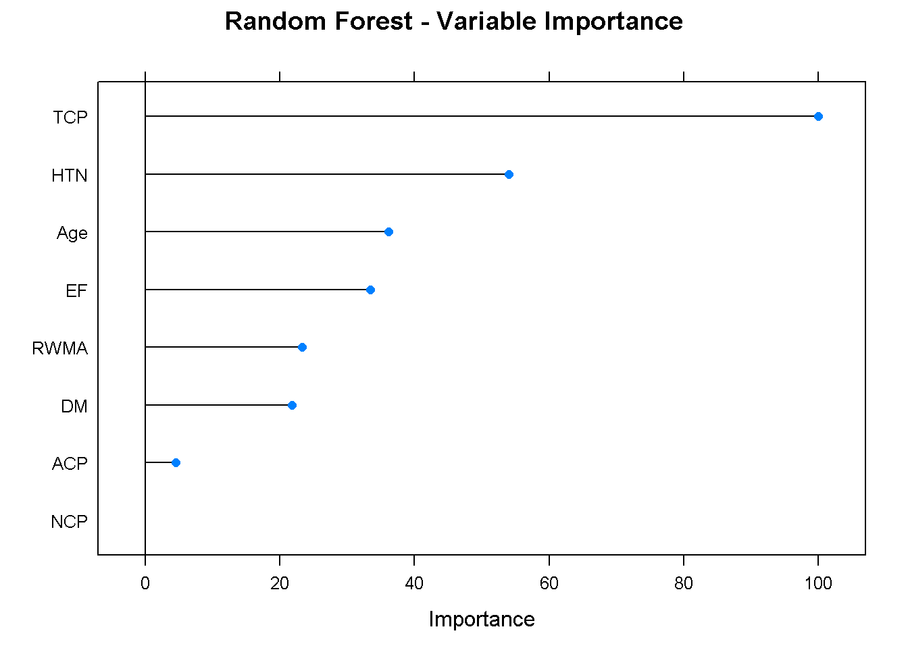
## Confusion Matrix and Statistics
##
## Reference
## Prediction Cad Normal
## Cad 47 5
## Normal 7 16
##
## Accuracy : 0.84
## 95% CI : (0.7372, 0.9145)
## No Information Rate : 0.72
## P-Value [Acc > NIR] : 0.01131
##
## Kappa : 0.6144
##
## Mcnemar's Test P-Value : 0.77283
##
## Sensitivity : 0.8704
## Specificity : 0.7619
## Pos Pred Value : 0.9038
## Neg Pred Value : 0.6957
## Precision : 0.9038
## Recall : 0.8704
## F1 : 0.8868
## Prevalence : 0.7200
## Detection Rate : 0.6267
## Detection Prevalence : 0.6933
## Balanced Accuracy : 0.8161
##
## 'Positive' Class : Cad
## RFcMatrix2 <- confusionMatrix(RF_pred, AllvFtest[,outcomeName], mode = 'everything')
RFcMatrix2$table %>%
data.frame() %>%
mutate(Prediction = factor(Prediction, levels = c("Cad", "Normal"))) %>%
group_by(Reference) %>%
mutate(total = sum(Freq)) %>%
ungroup() %>%
ggplot(aes(Reference, Prediction, fill = Freq)) +
geom_tile() +
geom_text(aes(label = Freq), size = 8) +
scale_fill_gradient(low = "white", high = "palegreen4") +
scale_x_discrete(position = "top") +
geom_tile(color = "black", fill = "black", alpha = 0)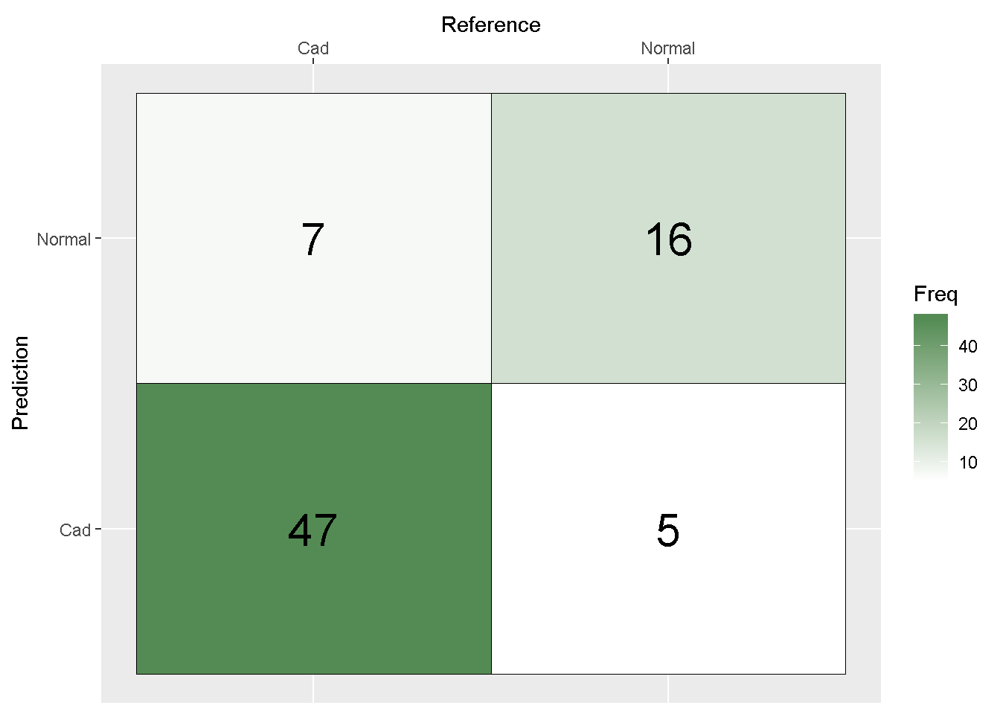
EvalRF2 <- data.frame(c(RFcMatrix2$overall['Accuracy'], RFcMatrix2$overall['Kappa'], RFcMatrix2$byClass['Sensitivity'], RFcMatrix2$byClass['Specificity'], RFcMatrix2$byClass['Precision'], RFcMatrix2$byClass['Recall'], RFcMatrix2$byClass['F1']))
colnames(EvalRF2)[1] <- "Metrics"
EvalRF2## Metrics
## Accuracy 0.8400000
## Kappa 0.6143959
## Sensitivity 0.8703704
## Specificity 0.7619048
## Precision 0.9038462
## Recall 0.8703704
## F1 0.8867925Variable importance and confusion matrix for the Naive Bayes algorithm:
## ROC curve variable importance
##
## Importance
## TCP 100.00
## ACP 68.36
## HTN 52.61
## RWMA 48.82
## EF 46.45
## Age 40.40
## DM 33.53
## NCP 0.00## Confusion Matrix and Statistics
##
## Reference
## Prediction Cad Normal
## Cad 49 1
## Normal 5 20
##
## Accuracy : 0.92
## 95% CI : (0.834, 0.9701)
## No Information Rate : 0.72
## P-Value [Acc > NIR] : 1.76e-05
##
## Kappa : 0.8125
##
## Mcnemar's Test P-Value : 0.2207
##
## Sensitivity : 0.9074
## Specificity : 0.9524
## Pos Pred Value : 0.9800
## Neg Pred Value : 0.8000
## Precision : 0.9800
## Recall : 0.9074
## F1 : 0.9423
## Prevalence : 0.7200
## Detection Rate : 0.6533
## Detection Prevalence : 0.6667
## Balanced Accuracy : 0.9299
##
## 'Positive' Class : Cad
## NBcMatrix2 <- confusionMatrix(NB_pred, AllvFtest[,outcomeName], mode = 'everything')
NBcMatrix2$table %>%
data.frame() %>%
mutate(Prediction = factor(Prediction, levels = c("Cad", "Normal"))) %>%
group_by(Reference) %>%
mutate(total = sum(Freq)) %>%
ungroup() %>%
ggplot(aes(Reference, Prediction, fill = Freq)) +
geom_tile() +
geom_text(aes(label = Freq), size = 8) +
scale_fill_gradient(low = "white", high = "palegreen4") +
scale_x_discrete(position = "top") +
geom_tile(color = "black", fill = "black", alpha = 0)
EvalNB2 <- data.frame(c(NBcMatrix2$overall['Accuracy'], NBcMatrix2$overall['Kappa'], NBcMatrix2$byClass['Sensitivity'], NBcMatrix2$byClass['Specificity'], NBcMatrix2$byClass['Precision'], NBcMatrix2$byClass['Recall'], NBcMatrix2$byClass['F1']))
colnames(EvalNB2)[1] <- "Metrics"
EvalNB2## Metrics
## Accuracy 0.9200000
## Kappa 0.8125000
## Sensitivity 0.9074074
## Specificity 0.9523810
## Precision 0.9800000
## Recall 0.9074074
## F1 0.9423077Variable importance and confusion matrix for the Logistic Regression algorithm:
## glm variable importance
##
## Overall
## TCP1 100.00
## RWMA.L 97.21
## DM1 77.64
## EF.L 70.39
## Age.L 56.85
## HTN1 38.45
## ACPY 15.64
## NCPY 0.00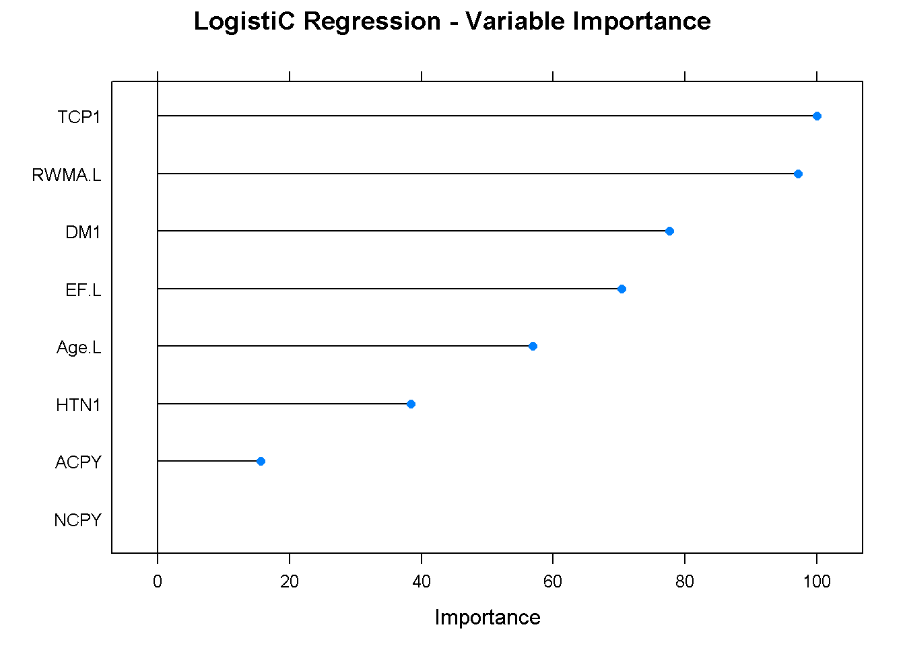
## Confusion Matrix and Statistics
##
## Reference
## Prediction Cad Normal
## Cad 47 0
## Normal 7 21
##
## Accuracy : 0.9067
## 95% CI : (0.8171, 0.9616)
## No Information Rate : 0.72
## P-Value [Acc > NIR] : 7.087e-05
##
## Kappa : 0.7899
##
## Mcnemar's Test P-Value : 0.02334
##
## Sensitivity : 0.8704
## Specificity : 1.0000
## Pos Pred Value : 1.0000
## Neg Pred Value : 0.7500
## Precision : 1.0000
## Recall : 0.8704
## F1 : 0.9307
## Prevalence : 0.7200
## Detection Rate : 0.6267
## Detection Prevalence : 0.6267
## Balanced Accuracy : 0.9352
##
## 'Positive' Class : Cad
## LRcMatrix2 <- confusionMatrix(LR_pred, AllvFtest[,outcomeName], mode = 'everything')
LRcMatrix2$table %>%
data.frame() %>%
mutate(Prediction = factor(Prediction, levels = c("Cad", "Normal"))) %>%
group_by(Reference) %>%
mutate(total = sum(Freq)) %>%
ungroup() %>%
ggplot(aes(Reference, Prediction, fill = Freq)) +
geom_tile() +
geom_text(aes(label = Freq), size = 8) +
scale_fill_gradient(low = "white", high = "palegreen4") +
scale_x_discrete(position = "top") +
geom_tile(color = "black", fill = "black", alpha = 0)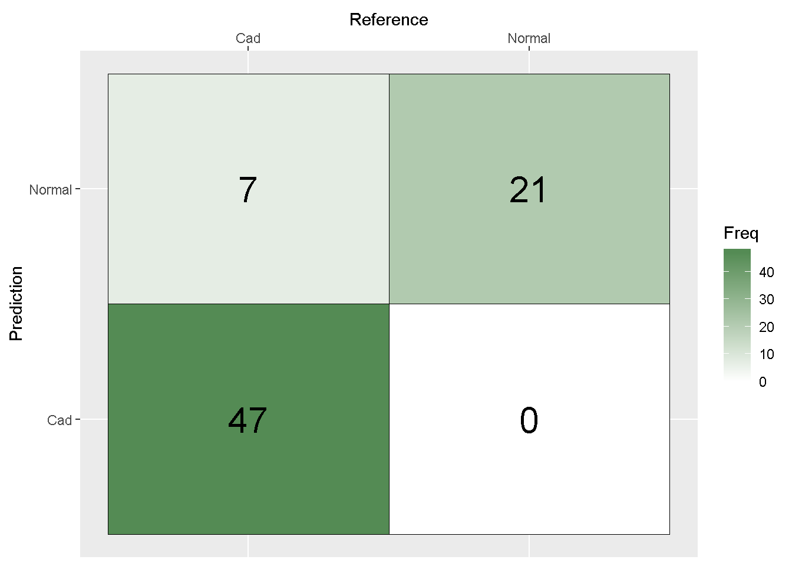
EvalLR2 <- data.frame(c(LRcMatrix2$overall['Accuracy'], LRcMatrix2$overall['Kappa'], LRcMatrix2$byClass['Sensitivity'], LRcMatrix2$byClass['Specificity'], LRcMatrix2$byClass['Precision'], LRcMatrix2$byClass['Recall'], LRcMatrix2$byClass['F1']))
colnames(EvalLR2)[1] <- "Metrics"
EvalLR2## Metrics
## Accuracy 0.9066667
## Kappa 0.7899160
## Sensitivity 0.8703704
## Specificity 1.0000000
## Precision 1.0000000
## Recall 0.8703704
## F1 0.9306931Ensemble evaluation:
Checking on the direction of log odds for a one unit increase in the selected features (using logistic regression) to confirm the relationship between the independent variables and the dependent variable (CAD or Normal):
logiTrain <- data.frame(AllvFtrain[,c(23,51,27,26,50,1,5,4,53)])
logiTrain$CAD <- relevel(logiTrain$CAD, ref = "Normal")
str(logiTrain)## 'data.frame': 228 obs. of 9 variables:
## $ TCP : Factor w/ 2 levels "0","1": 1 2 2 1 2 2 1 2 1 1 ...
## $ RWMA: Ord.factor w/ 2 levels "Med"<"High": 1 2 2 1 1 2 1 2 2 2 ...
## $ NCP : Factor w/ 2 levels "N","Y": 1 1 1 2 1 1 2 1 1 1 ...
## $ ACP : Factor w/ 2 levels "N","Y": 1 1 1 1 1 1 1 1 2 2 ...
## $ EF : Ord.factor w/ 2 levels "Low"<"Med": 1 1 1 2 1 1 1 1 1 2 ...
## $ Age : Ord.factor w/ 2 levels "Med"<"High": 2 2 2 2 2 2 2 2 2 2 ...
## $ HTN : Factor w/ 2 levels "0","1": 2 2 1 2 1 1 1 2 2 2 ...
## $ DM : Factor w/ 2 levels "0","1": 1 1 1 1 1 1 1 1 2 2 ...
## $ CAD : Factor w/ 2 levels "Normal","Cad": 2 2 2 1 2 2 1 2 2 2 ...##
## Call:
## glm(formula = CAD ~ ., family = "binomial", data = logiTrain)
##
## Deviance Residuals:
## Min 1Q Median 3Q Max
## -2.7523 -0.4586 0.1203 0.4239 2.1316
##
## Coefficients:
## Estimate Std. Error z value Pr(>|z|)
## (Intercept) -1.1161 0.6932 -1.610 0.107398
## TCP1 3.2048 0.7603 4.215 2.5e-05 ***
## RWMA.L 1.8168 0.5640 3.222 0.001275 **
## NCPY -1.0156 1.0870 -0.934 0.350146
## ACPY 0.3808 0.6703 0.568 0.569944
## EF.L -1.2045 0.3405 -3.538 0.000404 ***
## Age.L 1.0022 0.3584 2.797 0.005165 **
## HTN1 1.4004 0.4671 2.998 0.002715 **
## DM1 1.3809 0.5558 2.485 0.012969 *
## ---
## Signif. codes: 0 '***' 0.001 '**' 0.01 '*' 0.05 '.' 0.1 ' ' 1
##
## (Dispersion parameter for binomial family taken to be 1)
##
## Null deviance: 274.37 on 227 degrees of freedom
## Residual deviance: 133.09 on 219 degrees of freedom
## AIC: 151.09
##
## Number of Fisher Scoring iterations: 6Logistic regression coefficients with exponentiated coefficients:
## (Intercept) TCP1 RWMA.L NCPY ACPY EF.L
## 0.3275554 24.6513633 6.1523322 0.3621724 1.4634983 0.2998434
## Age.L HTN1 DM1
## 2.7243404 4.0567788 3.9785626Converting to log odds into percentages to assist with interpretation of impact of each independent variable used in the logistic regression:
# The predicted value for TCP: the intercept, plus the dummy coefficient for TCP
TCP1 <- coef(LRlogit)["(Intercept)"] + coef(LRlogit)["TCP1"]
# Converting the predicted value from log odds into percentage:
TCPpresent <-exp(TCP1)/(1 + exp(TCP1))
# Now for RWMA:
RWMA1 <- coef(LRlogit)["(Intercept)"] + coef(LRlogit)["RWMAHigh"]
RWMAhigh <- exp(RWMA1)/(1 + exp(RWMA1))
# Now for NCP: (Note: not statistically signficant):
NCP1 <- coef(LRlogit)["(Intercept)"] + coef(LRlogit)["NCPY"]
NCPpresent <- exp(NCP1)/(1 + exp(NCP1))
# Now for ACP: (Note: also not statistically signficant):
ACP1 <- coef(LRlogit)["(Intercept)"] + coef(LRlogit)["ACPY"]
ACPpresent <- exp(ACP1)/(1 + exp(ACP1))
# Now for EF:
EF1 <- coef(LRlogit)["(Intercept)"] + coef(LRlogit)["EFMed"]
EFnormal <- exp(EF1)/(1 + exp(EF1))
# Now for Age:
Age1 <- coef(LRlogit)["(Intercept)"] + coef(LRlogit)["AgeHigh"]
AgeHigh <- exp(Age1)/(1 + exp(Age1))
# Now for HTN:
HTN1 <- coef(LRlogit)["(Intercept)"] + coef(LRlogit)["HTN1"]
HTNpresent <- exp(HTN1)/(1 + exp(HTN1))
# Now for DM:
DM1 <- coef(LRlogit)["(Intercept)"] + coef(LRlogit)["DM1"]
DMpresent <- exp(DM1)/(1 + exp(DM1))
LRPredPerc <- data.frame(TCPpresent, RWMAhigh, NCPpresent, ACPpresent, EFnormal, AgeHigh, HTNpresent, DMpresent)
t(LRPredPerc)## (Intercept)
## TCPpresent 0.8898034
## RWMAhigh NA
## NCPpresent 0.1060506
## ACPpresent 0.3240397
## EFnormal NA
## AgeHigh NA
## HTNpresent 0.5705980
## DMpresent 0.5658214Running avova() function on the model to analyze the table of deviance. Shows that there is a significant gap between the null model (with only the intercept) and the residual deviance (after adding each variable). Adding ‘TCP’ and ‘RWMA’ significantly reduces the residual deviance. (The large p-value for ‘ACP’ indicates that the model without this variable explains ‘approximately’ the same amount of variation - that is, it has little impact).
## Analysis of Deviance Table
##
## Model: binomial, link: logit
##
## Response: CAD
##
## Terms added sequentially (first to last)
##
##
## Df Deviance Resid. Df Resid. Dev Pr(>Chi)
## NULL 227 274.37
## TCP 1 65.183 226 209.18 6.824e-16 ***
## RWMA 1 25.092 225 184.09 5.466e-07 ***
## NCP 1 1.796 224 182.29 0.180253
## ACP 1 0.158 223 182.14 0.690653
## EF 1 16.665 222 165.47 4.459e-05 ***
## Age 1 10.159 221 155.31 0.001436 **
## HTN 1 15.408 220 139.90 8.660e-05 ***
## DM 1 6.815 219 133.09 0.009040 **
## ---
## Signif. codes: 0 '***' 0.001 '**' 0.01 '*' 0.05 '.' 0.1 ' ' 1Using the McFadden R Squared Index to assess the model fit. Also checking (very rough) approximate percentage of those predicted to be ‘Normal’ versus those with ‘CAD’ using logistic regression results. Compared against the study, where 28.7% were found to be ‘normal’ (87/303), using a subset of this data set with 228 observations shows a prediction of 36.5% being ‘normal’.
## llh llhNull G2 McFadden r2ML
## -66.5446543 -137.1829841 141.2766597 0.5149205 0.4618589
## r2CU
## 0.6599719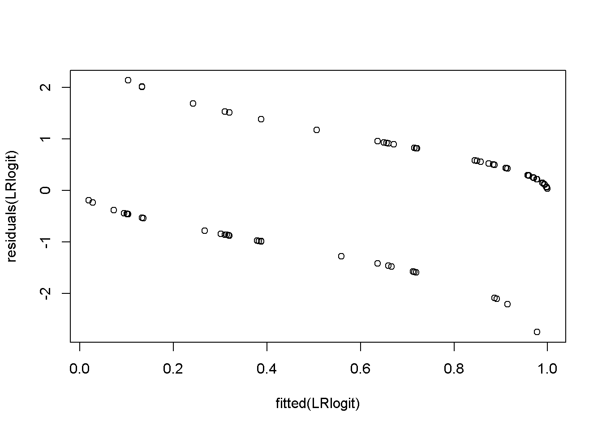
## (Intercept) TCP1 RWMA.L NCPY ACPY EF.L
## -1.1160980 3.2048322 1.8168312 -1.0156350 0.3808297 -1.2044949
## Age.L HTN1 DM1
## 1.0022263 1.4003893 1.3809206LRPred <- data.frame(predict(LRlogit, type = "response"))
names(LRPred)[1]<-"Predict"
N <- sum(LRPred$Predict < 0.50)
C <- sum(LRPred$Predict >= 0.50)
(N/C)*100## [1] 38.18182Explanation of the order of factor variables for the logistic regression output in R: R will use the alphabetical order of the variable results - and choose the letter that is higher in the alphabet as the reference variable (which is typically coded automatically with a ‘1’, versus ‘0’ - or a ‘2’ vs ‘1’ on the str() output). As such, ‘Normal’ would be the reference variable (equal to ‘2’ on the str() output.). However, ‘CAD’ should be the reference variable and so I have ‘re-leveled’ that attribute so that ‘CAD’ is used as the reference (and as such, is showing as a ‘2’ on the str() output).
Other variables explained for the glm output:
TCP: ‘Yes’, or ‘1’, is base case (hence shows ‘2’ on str() output.
ACP: Same base case behaviour as TCP. This happens automatically because ‘Y’ comes after ‘N’ in the alphabet. ‘Y’ is showing with a ‘2’ on the str() output.
RWMA: ‘High’ is the base case and is the ‘2’ on str() output. This factor has been ‘ordered’ so that even though the ‘H’ in ‘High’ comes before the ‘M’ in ‘Med’, High is treated as the base case (and is assigned the ‘2’ on the str() output.
EF is also an ‘ordered factor’, and so it has ‘Med’ as the base case (and is the ‘2’ on the str() output).
NCP: Is the same as ACP (for ‘Y’ and ‘N’, and ‘Y’ being the base case)
Age: Is treated the same as RWMA - so, ‘High’ is the base case.
HTN: Is treated the same as TCP
DM: Is treated the same as TCP
CAD: Releveled so that CAD is the reference (base case); as such the str() output shows ‘CAD’ as ‘2’, even though ‘C’ comes before ‘N’ (for ‘Normal’) in the alphabet.
GLM Output interpretation:
Note: The ACP result is not connected to the dependent variable in a statistically significant way. (This needs more investigation.)
TCP: For a one unit increase in TCP, the log odds of being diagnosed with Coronary Artery Disease increases by 3.4047
ACP: For a one unit increase in ACP, the log odds of being diagnosed with Coronary Artery Disease increases by 0.312 (Note: Not statistically significant relationship, per the p-value) #### RWMA: For a one unit increase in ‘RWMA Medium’ (versus ‘High’) , the log odds of being diagnosed with Coronary Artery Disease decreases by 2.6388 #### EF: For a one unit increase in ‘EF Medium’ (versus ‘Low’), the log odds of being diagnosed with Coronary Artery Disease DECREASES by 1.5196 #### NCP: For a one unit increase in NCP, the log odds of being diagnosed with Coronary Artery Disease DECREASES by 1.4209 (Note: not statistically significant, just outside of significance range per the p-value)
Age: For a one unit increase in ‘Age Medium’ (versus ‘High’), the log odds of being diagnosed with Coronary Artery Disease DECREASES by 1.6130
HTN: For a one unit increase in HTN, the log odds of being diagnosed with Coronary Artery Disease increases by 0.8657
DM: For a one unit increase in DM, the log odds of being diagnosed with Coronary Artery Disease increases by 1.8719
Brier Score for Logistic Regression model:
Documenting and plotting the Accuracy/Kappa/Sensitivity/Specificity stability of the algorithms using different numbers of ‘folds’ during cross validation - starting with the Random Forest algorithm:
RFstability <- data.frame(Accuracy=c(0.8933333, 0.8933333, 0.9066667, 0.9066667, 0.9066667, 0.9066667, 0.9066667),Kappa=c(0.7566910, 0.7429306, 0.7782003, 0.7782003, 0.7782003, 0.7782003, 0.7718383), Sensitivity=c(0.8703704, 0.9074074, 0.9074074, 0.9074074, 0.9074074, 0.9074074, 0.9259259), Specificity=c(0.9523810, 0.8571429, 0.9047619, 0.9047619, 0.9047619, 0.9047619, 0.8571429))
rownames(RFstability) <- c(5,10,15,20,25,30,35)
RFstability## Accuracy Kappa Sensitivity Specificity
## 5 0.8933333 0.7566910 0.8703704 0.9523810
## 10 0.8933333 0.7429306 0.9074074 0.8571429
## 15 0.9066667 0.7782003 0.9074074 0.9047619
## 20 0.9066667 0.7782003 0.9074074 0.9047619
## 25 0.9066667 0.7782003 0.9074074 0.9047619
## 30 0.9066667 0.7782003 0.9074074 0.9047619
## 35 0.9066667 0.7718383 0.9259259 0.8571429cols <- c("darkseagreen", "darkorange1","cornflowerblue","gray48")
pch <- c(17,18,15, 16)
xmax <- nrow(RFstability) + 2.5
par(mar=c(4,4,1,1))
plot(1:nrow(RFstability), 1:nrow(RFstability), pch="",
xlab="nFolds", ylab=NA, xaxt="n", yaxt="n",
ylim=c(.725,.975), bty="n", xlim=c(1,xmax), main="Random Forest Stability Results; Part 1")
for (i in seq(.725,.975,by=.025)) {
lines(1:nrow(RFstability), rep(i,nrow(RFstability)), col="gray69")
}
for (i in 1:ncol(RFstability)) {
points(1:nrow(RFstability), RFstability[,i], pch=pch[i],
col=cols[i], cex=1.2)
lines(1:nrow(RFstability), RFstability[,i], col=cols[i],
lwd=2)
}
axis(side=1, at=1:nrow(RFstability), tick=FALSE,
labels=rownames(RFstability))
axis(side=1, at=seq(-0.5,8.5,by=1),
tick=FALSE, labels=NA)
axis(side=2, at=seq(.725,.975,by=.025), tick=TRUE,
las=TRUE, labels=paste(seq(.725,.975,by=.025)))
legend('bottomright',legend=colnames(RFstability), pch=pch,
col=cols, cex=1.0, bty="n", lwd=3, lty=1)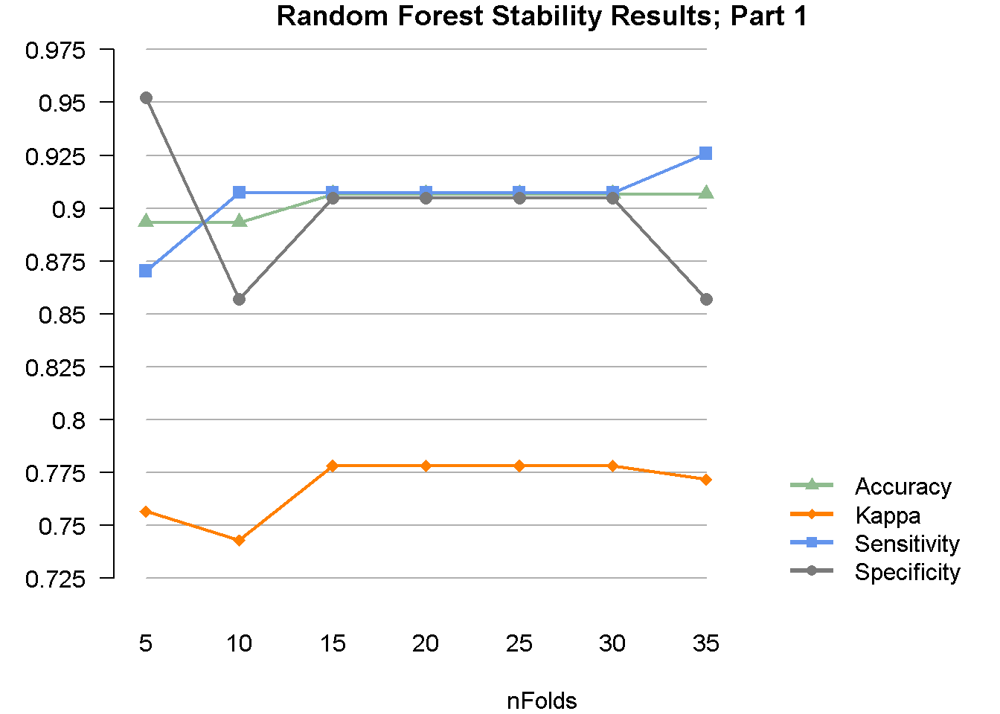 #### Plotting the Precision/Recall/F1 stability of the Random Forest algorithm:
RFstability2 <- data.frame(Precision=c(0.9791667, 0.9423077, 0.9607843, 0.9607843, 0.9607843, 0.9607843, 0.9433962), Recall=c(0.8703704, 0.9074074, 0.9074074, 0.9074074, 0.9074074, 0.9074074, 0.9259259), F1=c(0.9215686, 0.9245283, 0.9333333, 0.9333333, 0.9333333, 0.9333333, 0.9345794))
rownames(RFstability2) <- c(5,10,15,20,25,30,35)
RFstability2## Precision Recall F1
## 5 0.9791667 0.8703704 0.9215686
## 10 0.9423077 0.9074074 0.9245283
## 15 0.9607843 0.9074074 0.9333333
## 20 0.9607843 0.9074074 0.9333333
## 25 0.9607843 0.9074074 0.9333333
## 30 0.9607843 0.9074074 0.9333333
## 35 0.9433962 0.9259259 0.9345794cols <- c("darkturquoise", "darkorchid1","gray0")
pch <- c(17,18,15)
xmax <- nrow(RFstability2) + 2.5
par(mar=c(4,4,1,1))
plot(1:nrow(RFstability2), 1:nrow(RFstability2), pch="",
xlab="nFolds", ylab=NA, xaxt="n", yaxt="n",
ylim=c(.85,1.0), bty="n", xlim=c(1,xmax), main="Random Forest Stability Results; Part 2")
for (i in seq(.85,1.0,by=.025)) {
lines(1:nrow(RFstability2), rep(i,nrow(RFstability2)), col="gray69")
}
for (i in 1:ncol(RFstability2)) {
points(1:nrow(RFstability2), RFstability2[,i], pch=pch[i],
col=cols[i], cex=1.2)
lines(1:nrow(RFstability2), RFstability2[,i], col=cols[i],
lwd=2)
}
axis(side=1, at=1:nrow(RFstability2), tick=FALSE,
labels=rownames(RFstability2))
axis(side=1, at=seq(-0.5,8.5,by=1),
tick=FALSE, labels=NA)
axis(side=2, at=seq(.85,1.0,by=.025), tick=TRUE,
las=TRUE, labels=paste(seq(.85,1.0,by=.025)))
legend('bottomright',legend=colnames(RFstability2), pch=pch,
col=cols, cex=1.0, bty="n", lwd=3, lty=1)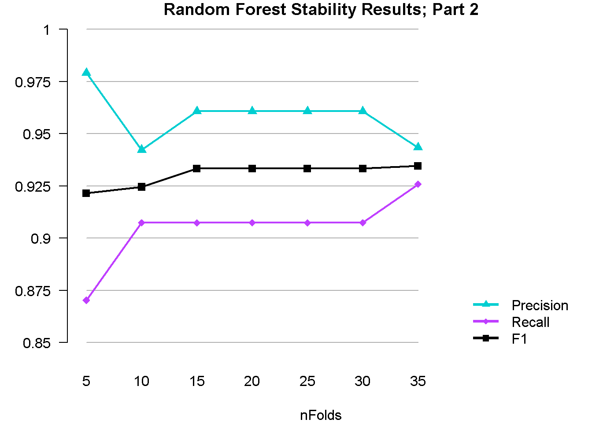
Plotting the Accuracy/Kappa/Sensitivity/Specificity stability of the Naive Bayes algorithm:
NBstability <- data.frame(Accuracy=c(0.9200000, 0.9200000, 0.9200000, 0.9200000, 0.9066667, 0.9200000, 0.9200000), Kappa=c(0.8071979, 0.8071979, 0.8071979, 0.8071979, 0.7782003, 0.8071979, 0.8071979), Sensitivity=c(0.9259259, 0.9259259, 0.9259259, 0.9259259, 0.9074074, 0.9259259, 0.9259259), Specificity=rep(0.9047619, 7))
rownames(NBstability) <- c(5,10,15,20,25,30,35)
NBstability## Accuracy Kappa Sensitivity Specificity
## 5 0.9200000 0.8071979 0.9259259 0.9047619
## 10 0.9200000 0.8071979 0.9259259 0.9047619
## 15 0.9200000 0.8071979 0.9259259 0.9047619
## 20 0.9200000 0.8071979 0.9259259 0.9047619
## 25 0.9066667 0.7782003 0.9074074 0.9047619
## 30 0.9200000 0.8071979 0.9259259 0.9047619
## 35 0.9200000 0.8071979 0.9259259 0.9047619cols <- c("darkseagreen", "darkorange1","cornflowerblue","gray48")
pch <- c(17,18,15, 16)
xmax <- nrow(NBstability) + 2.5
par(mar=c(4,4,1,1))
plot(1:nrow(NBstability), 1:nrow(NBstability), pch="",
xlab="nFolds", ylab=NA, xaxt="n", yaxt="n",
ylim=c(.775,.95), bty="n", xlim=c(1,xmax), main="Naive Bayes Stability Results; Part 1")
for (i in seq(.775,.95,by=.025)) {
lines(1:nrow(NBstability), rep(i,nrow(NBstability)), col="gray69")
}
for (i in 1:ncol(NBstability)) {
points(1:nrow(NBstability), NBstability[,i], pch=pch[i],
col=cols[i], cex=1.2)
lines(1:nrow(NBstability), NBstability[,i], col=cols[i],
lwd=2)
}
axis(side=1, at=1:nrow(NBstability), tick=FALSE,
labels=rownames(NBstability))
axis(side=1, at=seq(-0.5,8.5,by=1),
tick=FALSE, labels=NA)
axis(side=2, at=seq(.775,.95,by=.025), tick=TRUE,
las=TRUE, labels=paste(seq(.775,.95,by=.025)))
legend('bottomright',legend=colnames(NBstability), pch=pch,
col=cols, cex=1.0, bty="n", lwd=3, lty=1)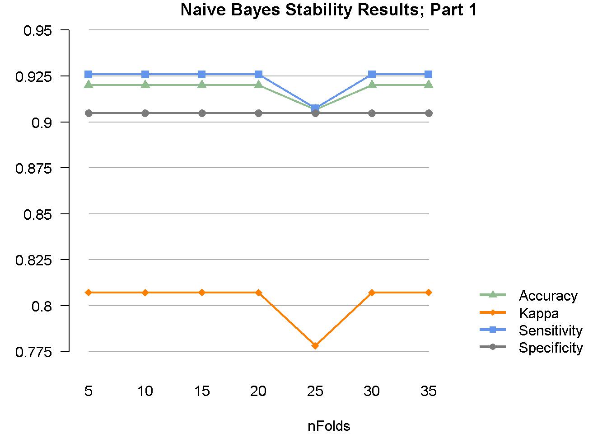
Plotting the Precision/Recall/F1 stability of the Naive Bayes algorithm:
NBstability2 <- data.frame(Precision=c(0.9615385, 0.9615385, 0.9615385, 0.9615385, 0.9607843, 0.9615385, 0.9615385), Recall=c(0.9259259, 0.9259259, 0.9259259, 0.9259259, 0.9074074, 0.9259259, 0.9259259), F1=c(0.9433962, 0.9433962, 0.9433962, 0.9433962, 0.9333333, 0.9433962, 0.9433962))
rownames(NBstability2) <- c(5,10,15,20,25,30,35)
NBstability2## Precision Recall F1
## 5 0.9615385 0.9259259 0.9433962
## 10 0.9615385 0.9259259 0.9433962
## 15 0.9615385 0.9259259 0.9433962
## 20 0.9615385 0.9259259 0.9433962
## 25 0.9607843 0.9074074 0.9333333
## 30 0.9615385 0.9259259 0.9433962
## 35 0.9615385 0.9259259 0.9433962cols <- c("darkturquoise", "darkorchid1","gray0")
pch <- c(17,18,15)
xmax <- nrow(NBstability2) + 2.5
par(mar=c(4,4,1,1))
plot(1:nrow(NBstability2), 1:nrow(NBstability2), pch="",
xlab="nFolds", ylab=NA, xaxt="n", yaxt="n",
ylim=c(.9,1.0), bty="n", xlim=c(1,xmax), main="Naive Bayes Stability Results; Part 2")
for (i in seq(.9,1.0,by=.025)) {
lines(1:nrow(NBstability2), rep(i,nrow(NBstability2)), col="gray69")
}
for (i in 1:ncol(NBstability2)) {
points(1:nrow(NBstability2), NBstability2[,i], pch=pch[i],
col=cols[i], cex=1.2)
lines(1:nrow(NBstability2), NBstability2[,i], col=cols[i],
lwd=2)
}
axis(side=1, at=1:nrow(NBstability2), tick=FALSE,
labels=rownames(NBstability2))
axis(side=1, at=seq(-0.5,8.5,by=1),
tick=FALSE, labels=NA)
axis(side=2, at=seq(.9,1.0,by=.025), tick=TRUE,
las=TRUE, labels=paste(seq(.9,1.0,by=.025)))
legend('bottomright',legend=colnames(NBstability2), pch=pch,
col=cols, cex=1.0, bty="n", lwd=3, lty=1)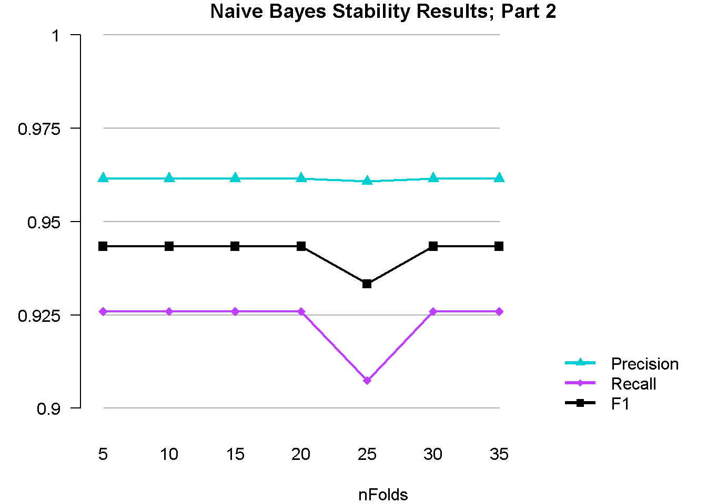
Plotting the Accuracy/Kappa/Sensitivity/Specificity stability of the Logistic Regression algorithm:
LRstability <- data.frame(Accuracy=c(0.8800000, 0.9066667, 0.9066667, 0.9066667, 0.9066667, 0.9066667, 0.8933333), Kappa=c(0.6686303, 0.7503566, 0.7503566, 0.7503566, 0.7503566, 0.7503566, 0.7101449), Sensitivity=rep(0.9814815, 7), Specificity=c(0.6190476, 0.7142857, 0.7142857, 0.7142857, 0.7142857, 0.7142857, 0.6666667))
rownames(LRstability) <- c(5,10,15,20,25,30,35)
LRstability## Accuracy Kappa Sensitivity Specificity
## 5 0.8800000 0.6686303 0.9814815 0.6190476
## 10 0.9066667 0.7503566 0.9814815 0.7142857
## 15 0.9066667 0.7503566 0.9814815 0.7142857
## 20 0.9066667 0.7503566 0.9814815 0.7142857
## 25 0.9066667 0.7503566 0.9814815 0.7142857
## 30 0.9066667 0.7503566 0.9814815 0.7142857
## 35 0.8933333 0.7101449 0.9814815 0.6666667cols <- c("darkseagreen", "darkorange1","cornflowerblue","gray48")
pch <- c(17,18,15, 16)
xmax <- nrow(LRstability) + 2.5
par(mar=c(4,4,1,1))
plot(1:nrow(LRstability), 1:nrow(LRstability), pch="",
xlab="nFolds", ylab=NA, xaxt="n", yaxt="n",
ylim=c(.6,1.0), bty="n", xlim=c(1,xmax), main="Logistic Regression Stability Results; Part 1")
for (i in seq(.6,1.0,by=.025)) {
lines(1:nrow(LRstability), rep(i,nrow(LRstability)), col="gray69")
}
for (i in 1:ncol(LRstability)) {
points(1:nrow(LRstability), LRstability[,i], pch=pch[i],
col=cols[i], cex=1.2)
lines(1:nrow(LRstability), LRstability[,i], col=cols[i],
lwd=2)
}
axis(side=1, at=1:nrow(LRstability), tick=FALSE,
labels=rownames(LRstability))
axis(side=1, at=seq(-0.5,8.5,by=1),
tick=FALSE, labels=NA)
axis(side=2, at=seq(.6,1.0,by=.025), tick=TRUE,
las=TRUE, labels=paste(seq(.6,1.0,by=.025)))
legend('bottomright',legend=colnames(LRstability), pch=pch,
col=cols, cex=1.0, bty="n", lwd=3, lty=1)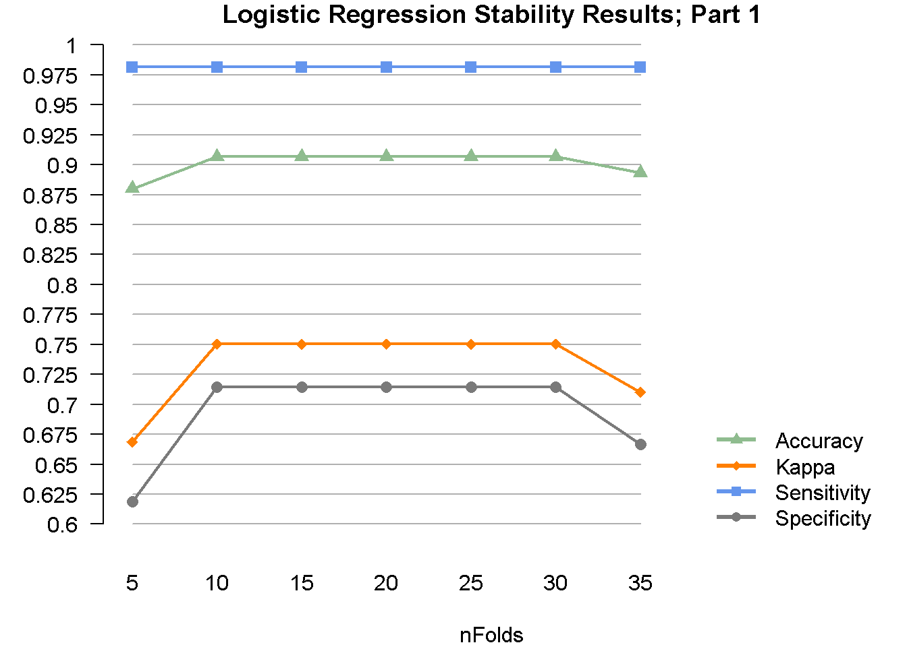 #### Plotting the Precision/Recall/F1 stability of the Logistic Regression algorithm:
LRstability2 <- data.frame(Precision=c(0.8688525, 0.8983051, 0.8983051, 0.8983051, 0.8983051, 0.8983051, 0.8833333), Recall=rep(0.9814815, 7), F1=c(0.9217391, 0.9380531, 0.9380531, 0.9380531, 0.9380531, 0.9380531, 0.9298246))
rownames(LRstability2) <- c(5,10,15,20,25,30,35)
LRstability2## Precision Recall F1
## 5 0.8688525 0.9814815 0.9217391
## 10 0.8983051 0.9814815 0.9380531
## 15 0.8983051 0.9814815 0.9380531
## 20 0.8983051 0.9814815 0.9380531
## 25 0.8983051 0.9814815 0.9380531
## 30 0.8983051 0.9814815 0.9380531
## 35 0.8833333 0.9814815 0.9298246cols <- c("darkturquoise", "darkorchid1","gray0")
pch <- c(17,18,15)
xmax <- nrow(LRstability2) + 2.5
par(mar=c(4,4,1,1))
plot(1:nrow(LRstability2), 1:nrow(LRstability2), pch="",
xlab="nFolds", ylab=NA, xaxt="n", yaxt="n",
ylim=c(.85,1.0), bty="n", xlim=c(1,xmax), main="Logistic Regression Stability Results; Part 2")
for (i in seq(.85,1.0,by=.025)) {
lines(1:nrow(LRstability2), rep(i,nrow(LRstability2)), col="gray69")
}
for (i in 1:ncol(LRstability2)) {
points(1:nrow(LRstability2), LRstability2[,i], pch=pch[i],
col=cols[i], cex=1.2)
lines(1:nrow(LRstability2), LRstability2[,i], col=cols[i],
lwd=2)
}
axis(side=1, at=1:nrow(LRstability2), tick=FALSE,
labels=rownames(LRstability2))
axis(side=1, at=seq(-0.5,8.5,by=1),
tick=FALSE, labels=NA)
axis(side=2, at=seq(.85,1.0,by=.025), tick=TRUE,
las=TRUE, labels=paste(seq(.85,1.0,by=.025)))
legend('bottomright',legend=colnames(LRstability2), pch=pch,
col=cols, cex=1.0, bty="n", lwd=3, lty=1)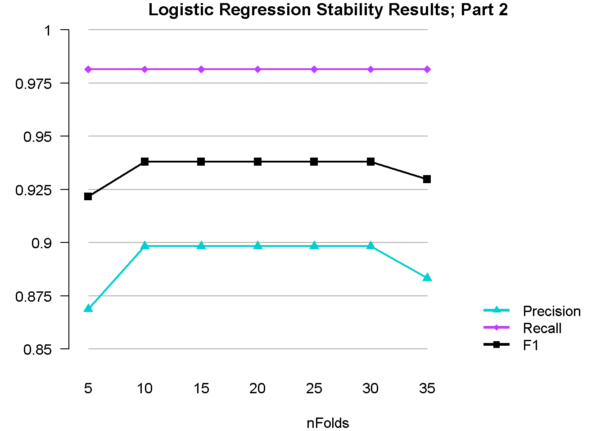
Plotting the total duration of each of the three algorithms combined for each of the seven different folds:
Duration <- data.frame(All3Algorithms=c(11.57, 10.17, 13.86, 16.69, 20.46, 23.51, 28.65))
rownames(Duration) <- c(3,5,7,10,15,20,25)
Duration## All3Algorithms
## 3 11.57
## 5 10.17
## 7 13.86
## 10 16.69
## 15 20.46
## 20 23.51
## 25 28.65cols <- c("royalblue2")
pch <- c(16)
xmax <- nrow(Duration) + 2.5
par(mar=c(4,4,1,1))
plot(1:nrow(Duration), 1:nrow(Duration), pch="",
xlab="nFolds", ylab=NA, xaxt="n", yaxt="n",
ylim=c(10,30), bty="n", xlim=c(1,xmax), main="Three Algorithm's Total Duration (Seconds)")
for (i in seq(10, 30,by=2)) {
lines(1:nrow(Duration), rep(i,nrow(Duration)), col="gray69")
}
for (i in 1:ncol(Duration)) {
points(1:nrow(Duration), Duration[,i], pch=pch[i],
col=cols[i], cex=1.2)
lines(1:nrow(Duration), Duration[,i], col=cols[i],
lwd=2)
}
axis(side=1, at=1:nrow(Duration), tick=FALSE,
labels=rownames(Duration))
axis(side=1, at=seq(-0.5,8.5,by=1),
tick=FALSE, labels=NA)
axis(side=2, at=seq(10,30,by=2), tick=TRUE,
las=TRUE, labels=paste(seq(10,30,by=2)))
legend('bottomright',legend=colnames(Duration), pch=pch,
col=cols, cex=1.0, bty="n", lwd=3, lty=1)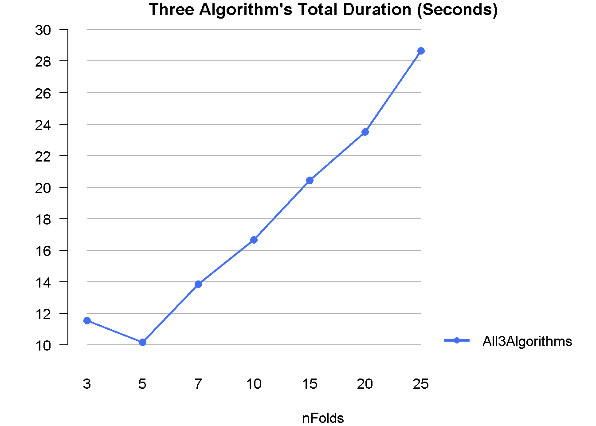 #### Computing the Cliff’s Delta effect size (for ordinal variables):
library(effsize)
RFacc <- c(0.8933333, 0.8933333, 0.9066667, 0.9066667, 0.9066667, 0.9066667, 0.9066667)
RFsens <- c(0.8703704, 0.9074074, 0.9074074, 0.9074074, 0.9074074, 0.9074074, 0.9259259)
RFspec <- c(0.9523810, 0.8571429, 0.9047619, 0.9047619, 0.9047619, 0.9047619, 0.8571429)
NBacc <- c(0.9200000, 0.9200000, 0.9200000, 0.9200000, 0.9066667, 0.9200000, 0.9200000)
NBsens <- c(0.9259259, 0.9259259, 0.9259259, 0.9259259, 0.9074074, 0.9259259, 0.9259259)
NBspec <- rep(0.9047619, 7)
LRacc <- c(0.8800000, 0.9066667, 0.9066667, 0.9066667, 0.9066667, 0.9066667, 0.8933333)
LRsens <- rep(0.9814815, 7)
LRspec <- c(0.6190476, 0.7142857, 0.7142857, 0.7142857, 0.7142857, 0.7142857, 0.6666667)Cliff’s Delta effect size for Accuracy:
#Random Forest accuracy to Naive Bayes accuracy:
RFNBaccDelta <- cliff.delta(RFacc, NBacc)
RFNBaccDelta##
## Cliff's Delta
##
## delta estimate: -0.8979592 (large)
## 95 percent confidence interval:
## lower upper
## -0.9980284 0.4910023#Random Forest accuracy to Logistic Regression accuracy:
RFLRaccDelta <- cliff.delta(RFacc, LRacc)
RFLRaccDelta##
## Cliff's Delta
##
## delta estimate: 0.04081633 (negligible)
## 95 percent confidence interval:
## lower upper
## -0.4679416 0.5292549#Logistic Regression accuracy to Naive Bayes accuracy:
LRNBaccDelta <- cliff.delta(LRacc, NBacc)
LRNBaccDelta##
## Cliff's Delta
##
## delta estimate: -0.8979592 (large)
## 95 percent confidence interval:
## lower upper
## -0.9980284 0.4910023Cliff’s Delta effect size for Sensitivity:
#Random Forest sensitivity to Naive Bayes sensitivity:
RFNBsensDelta <- cliff.delta(RFsens, NBsens)
RFNBsensDelta##
## Cliff's Delta
##
## delta estimate: -0.7346939 (large)
## 95 percent confidence interval:
## lower upper
## -0.9413617 -0.1271321#Random Forest sensitivity to Logistic Regression sensitivity:
RFLRsensDelta <- cliff.delta(RFsens, LRsens)## Warning in cliff.delta.default(RFsens, LRsens): The samples are fully
## disjoint, using approximate Confidence Interval estimation##
## Cliff's Delta
##
## delta estimate: -1 (large)
## 95 percent confidence interval:
## lower upper
## -1.0000000 -0.9311004#Logistic Regression sensitivity to Naive Bayes sensitivity:
LRNBsensDelta <- cliff.delta(LRsens, NBsens)## Warning in cliff.delta.default(LRsens, NBsens): The samples are fully
## disjoint, using approximate Confidence Interval estimation##
## Cliff's Delta
##
## delta estimate: 1 (large)
## 95 percent confidence interval:
## lower upper
## 0.9311004 1.0000000Cliff’s Delta effect size for Specificity:
#Random Forest specificity to Naive Bayes specificity:
RFNBspecDelta <- cliff.delta(RFspec, NBspec)
RFNBspecDelta##
## Cliff's Delta
##
## delta estimate: -0.1428571 (negligible)
## 95 percent confidence interval:
## lower upper
## -0.6015307 0.3866544#Random Forest specificity to Logistic Regression specificity:
RFLRspecDelta <- cliff.delta(RFspec, LRspec)## Warning in cliff.delta.default(RFspec, LRspec): The samples are fully
## disjoint, using approximate Confidence Interval estimation##
## Cliff's Delta
##
## delta estimate: 1 (large)
## 95 percent confidence interval:
## lower upper
## 0.9311004 1.0000000#Logistic Regression specificity to Naive Bayes specificity:
LRNBspecDelta <- cliff.delta(LRspec, NBspec)## Warning in cliff.delta.default(LRspec, NBspec): The samples are fully
## disjoint, using approximate Confidence Interval estimation##
## Cliff's Delta
##
## delta estimate: -1 (large)
## 95 percent confidence interval:
## lower upper
## -1.0000000 -0.9311004